微出国 · 学
路线 › 知识卡
知识卡：不看正文也能拿到核心内容
全站 336 张知识卡，按页面分组。一张卡只画正文里的一段——一个判断、一条算法、一份清单；卡上每个字都能在对应页面的正文里找到（资料核验 2026-09-20）。
境外赠与与继承：加拿大在哪一端征、哪一端管

- 先看先读两列再横看两行：同一次转移，在两端承担的税务作用不同。
- 易漏图中前提只对应国内父母及国内房子、存款；换成应税加拿大财产要另判。
- 下一步去练习分别判断给出方与接收方，再带资产所在地找持牌专业人士。

- 先看先区分收到款项、银行报告和房屋成本，这三件事走的是不同判断。
- 易漏资金来源审查与税务申报是两件事；房屋成本也不是沿用父母历史买价。
- 下一步去知识卡核对后续申报，再带资金来源和成本资料找持牌专业人士。

- 先看先看四类后续事件：收益、境外财产、信托、家庭再转。
- 易漏境外遗产在管理期间的分配不用报 T1142；遗产管理完变成持续存在的境外遗嘱信托之后才另看。
- 下一步去练习把每项事件对应到申报动作，疑难信托安排找持牌专业人士。
税务居民判定：三层联系与那条不存在的「六项门槛」

- 先看先看第一行：核心家庭或住所线索出现时，判断往往很快收束。
- 易漏第二层不是计数游戏，单独一项足以定性的情形并不寻常。
- 下一步去练习把自己的事实分别放进三层，再带边界事实找持牌专业人士。

- 先看先看两栏是否在数项目：左边设门槛，右边看组合权重。
- 易漏数量法两头都会错：五项强联系如本地工作、省医保、驾照会被放走；六项弱联系如信用卡、邮箱、报刊订阅反而会被判成居民。
- 下一步去模考判断题目到底考哪一版，再用讲解核对实际判断方法。

- 先看先盯两个方向：离开多久与有没有回来的打算，都不能单独定性。
- 易漏真正要一起核对的是是否还留有住所、家庭及其他居住事实。
- 下一步去练习按居住联系整理事实，再带跨境安排找持牌专业人士。
协定加比规则：四级台阶有先后，不是综合考虑

- 先看先看每一行右栏的箭头：它决定是否继续。
- 易漏配偶在协定第二层只是一项关系因素，不等同加拿大国内法的主要联系。
- 下一步去练习；问持牌专业人士：哪一层首次足以定案？

- 先看先分清是在判加拿大居民，还是在做协定 tie-breaker。
- 易漏婚姻关系在协定里不是单独终结条件，必须放回整体联系中。
- 下一步去「练习」做同事实双尺对照；边界案带生活与经济联系证据咨询专业人士。

- 先看第一眼只看今年真实在美天数，先定哪扇门还开着。
- 易漏协定不免FBAR、8938、5471、3520；绿卡持有人主张协定还可能危及移民法身份。
- 下一步去「讲解」核两条路径；绿卡或多表申报个案带身份与账户资料找专业人士。
TFSA 与 RESP 会不会触发 3520：先分类，再判外国

- 先看先看合同和法律形态，再决定美国税法把它当什么。
- 易漏开户在加拿大只是事实之一，不能替代美国实体定性与信托测试。
- 下一步去「讲义」核合同关键词；边界结构带开户文件找跨境税务专业人士。

- 先看先看账户用途能否落入程序列举，再核附加条件。
- 易漏加元名义上限不是直接答案；换算口径会影响是否满足金额条件。
- 下一步去「知识卡」逐项核条件；带账户条款与年末数据咨询跨境税务专业人士。

- 先看逐条检查“因为A，所以B”的跳步是否成立。
- 易漏程序性申报处理与个人所得项目是两条线，不能互相替代。
- 下一步去讲义；问持牌专业人士：美法下属何类、谁是税务所有人？
入境那一刀：成本重置到入境日市值，证据要自己留

- 先看先分清切点两侧的法律动作，别把国内原始买价带进来。
- 易漏应税加拿大财产等几类例外，不走这条一般规则。
- 下一步去讲解核对离境时如何切分，再把入境估值依据长期留存。

- 先看先看每种错法最终落到哪一种调整或罚则。
- 易漏多年以后，最难补的往往是当日估值依据，不是买房发票。
- 下一步去练习按四种错法逐项自查；边界税额问题带底稿问持牌税务专业人士。

- 先看先判断这套房哪些年度有资格，再决定是否值得拿来指定。
- 易漏入境视同重新取得；取得年“加一年”按条文似可用，但无 CRA 逐字说明，个案回原文。
- 下一步去知识卡把两套房逐年增值并排，再决定各年分配。
加拿大人的美国遗产税：判的是住所地，缴不缴看占比

- 先看先找到自己的身份行，再横向读适用范围与申报工具。
- 易漏遗产税身份另有判据，不能拿所得税居民测试直接替代。
- 下一步去讲义先确认自己属于哪一行，再据此判断申报表格。

- 先看先把“居民”放回各自税制里，不要看到同一个词就套同一标准。
- 易漏一个人的所得税结论，不能单独推出遗产税结论。
- 下一步去讲解整理长期居住意图的事实；边界情况带签证与居住安排问持牌专业人士。

- 先看先走完税额与抵免两步，再看两组同占比案例为何分叉。
- 易漏不要把这条判据误读成“占比相同，税就相同”。
- 下一步去练习按正本两组数据重算；复杂资产归类带清单问持牌跨境税务专业人士。
家庭内部转移的归属规则：给谁、怎么给、归不归

- 先看先找两栏答案不同的行，它们最能暴露归属边界。
- 易漏配偶这一行还受居住身份和关系存续期间限制；成年亲属要先分清是赠与还是借款。
- 下一步去练习，按对象、方式和收入类型逐笔判断由谁申报。

- 先看先横看资本利得边界一行，左右两边不归属的原因不同。
- 易漏未满 18 岁一栏讲的是给子女的财产；成年人一栏讲的是非公平交易贷款，别把条文互换。
- 下一步去讲解，带着「为什么卖出后不归属」逐条核对条文结构。

- 先看先看第三条，它会回头检查以前每个年度的付息是否按时。
- 易漏一票否决：只要有一年迟付，哪怕只晚几天，这一年和以后所有年份的收入都重新归回出借人；IT-511R 已归档。
- 下一步去练习，按日历年核对付款记录和截止日。
非居民预提税：两条互不相通的轨，和 2026 年租客那条例外

- 先看先按收入性质分轨，再看谁负责申报或扣缴。
- 易漏最容易错在把两套机制混用；退款或降率要走各自法定入口，不能拿另一条轨的普通申报替代。
- 下一步去路线，带着收入类型和现有表格确认入口。

- 先看先看三个限定词：付款人、住宅用途、收租方式，三者都影响扣缴责任。
- 易漏去世后的付款另有时间范围；「住宅」采用 s.67.7(1) 的定义，不要只按房屋名称判断。
- 下一步去讲解，逐项核对付款人身份、实际用途和收租安排。

- 先看先看「立即」：租客不再扣缴后，汇缴责任直接落到非居民本人。
- 易漏待核：2026-09-13 的 T4144、T4061 未说明住宅租客例外；报表、非居民税账户、NR4 由谁出仍待核。
- 下一步去讲解，带着报表、账户和 NR4 三个问题找持牌专业人士。
RESP 的三笔政府补助：结转有铁律，窗口错过不可逆

- 先看先盯单年最高值，它决定历史余额能补多快。
- 易漏可结转不等于可一次领完；补领年度还受单年限制。
- 下一步去练习，比较不同供款节奏下的补领结果。

- 先看先横看收入落在哪一档，再看首笔供款增加多少补助。
- 易漏判断时用的是更早报税年的家庭口径；没用掉的附加资格不会往后滚。
- 下一步去练习，用跨档收入测试表格判断。

- 先看先看最后一行：两种补助真正拉开差距的是补救空间。
- 易漏图外还要看资格：CLB 有收入门槛，BCTESG 还要求 BC 省合法常住居民。
- 下一步去练习，把开户时间和孩子年龄带入判断。
跨境身后事：基础提升两地同一个数，RRSP 是那个例外

- 先看先看右栏，例外不在申报，而在死亡后的成本处理。
- 易漏最容易漏的是把「人没了，账户资产就重新计算成本了」套到 RRSP 上。
- 下一步去讲解，继续追 IRD 在提取时如何计税。

- 先看先把前两项分开：一个问要不要报，一个问税怎么算。
- 易漏四类其他注册账户的 3520 定性不一致，尤其 TFSA、FHSA 没有现成豁免。
- 下一步去讲义，逐个账户核对申报结论。

- 先看先看两栏的金额口径：一边是收到遗产，一边是持有境外财产。
- 易漏美国一侧超过 $5,000 的单笔还要逐笔列明；不申报罚则是 5%/月、封顶 25%。
- 下一步去练习，分别判断该看 Form 3520 还是 T1135。
中加协定：养老金没有那一条，加美口径套不过来

- 先看先看第二列的「否」，别先拿加美口径代入，再转到最右栏。
- 易漏两个期限不是一回事：申报表看年度结束后的窗口，NR5 则按固定频率交。
- 下一步去「练习」，带「协定不降率时怎样处理」找持牌专业人士。

- 先看先比前两行：两项在加美协定有明确待遇，换到中加就落到不同条文结构。
- 易漏CRA 的 T4061 指南列出某些养老金给付有协定豁免的国家名单，名单里没有中国。
- 下一步去「练习」，带「第 20 条怎样影响养老金」找持牌专业人士。

- 先看先分开看三个地方，不要因为中文地名相近就假定同一协定适用。
- 易漏香港已有独立协定；台湾条文本页没核；澳门连是否另有安排都没有明确答案。
- 下一步遇到澳门个案，去「讲义」，再回 CRA 与持牌专业人士确认。
卫星家庭：CCB 不看住哪，CGEB 只看月初是不是居民

- 先看先比对左右两栏的判定入口，再追踪收入落到哪一侧。
- 易漏两地工作本身不会切断伴侣关系；税务居留仍要靠事实认定。
- 下一步去讲解，并带住所、工作、停留与家庭关系问题找持牌专业人士核对。

- 先看先把身份、福利、SVT、离境后果四条链分开看。
- 易漏勾选申报栏不会创造税务居留结论；关键在能证明的生活与工作事实。
- 下一步去讲义，并带能证明居住中心的资料找持牌专业人士核对。

- 先看先按全年状态选表内分段，再整理要报的款项与换汇依据。
- 易漏申请人是与孩子同住并主要照护的一方；两位家长同住时法律推定女性家长为主要照护者。
- 下一步去讲义，并带迁入日期、全年款项和申报方式找持牌专业人士核对。
自愿披露：被提示与未被提示差一档，十年有两把尺子

- 先看先定位申请发生前 CRA 掌握了什么，再看右栏后果。
- 易漏即使没收过信，CRA 若已从外部报送拿到涉及你的不合规资料，仍会按被提示处理；账户交换、平台报送增多，“没信＝一般减免”不成立。
- 下一步去练习，并带来信、账户记录与外部报送线索找持牌专业人士核对。

- 先看先认所属档位，再分别审查两类费用各自的时间边界。
- 易漏别把两把尺子混成一种年度口径；回执日之后仍会按原规则继续计息。
- 下一步去练习，并带申请年份、涉税年度和回执日期找持牌专业人士核对。

- 先看先看事项本身是否卡在不受理入口，再谈减免。
- 易漏曾获 VDP 减免后要保持合规；再次申请只在情况超出本人控制，或与前次是不同事项时才会考虑。
- 下一步去讲解，并带历次披露与已评定项目找持牌专业人士核对。
学签工签访客：183 天只给没有居住联系的人用


住加拿大的美国公民：那块注定抵不掉的 3.8%

- 先看先看领取人住哪国；居住地直接决定这三类给付在哪一边课税。
- 易漏旧文「美国全额计入后抵免」只是我方推论，已按IRS明文**撤回**；别再照旧文处理。
- 下一步去练习把本人情形套入，再核对其余跨境申报。

- 先看先看第一行的取小规则，再看后三项为何让常见减税手段失效。
- 易漏别把1040上的低应税所得当成安全信号；这里仍要看加回后的门槛口径。
- 下一步去讲解把资本利得年份与总收入并排测算。

- 先看先对照两个判决日期；右栏才是当前应采用的法律状态。
- 易漏三路缓和：改逐项扣除（全年外国税都改，常更贵，须两套算）；择时利得；压低调整后总收入（排除额仍加回）。
- 下一步去进度单列这格，并向持牌人士确认是否要保留退税权利。
离境申报：25,000 的门槛、10,000 的那条线、担保的安全线

- 先看先把免除项与剩余财产分开，再判断是否落入强制申报。
- 易漏截止日通常为离境次年的 4 月 30 日；没有应纳税款也可能发生迟报罚款。
- 下一步到练习判断离境当天的财产是否达到申报条件。

- 先看先按单件市值选左栏或右栏，再横向看两项处理。
- 易漏右栏还要求列明具体描述、获取日期和离境当天的市场公允价值。
- 下一步到练习按单件公平市场价值逐项判断。

- 先看先辨认离境前是否属魁省税务居民，再看对应栏的免担保界线。
- 易漏容易错在把两套机关当成同一程序；原魁省居民还要分别办省税延期。
- 下一步去路线核对离境税延期步骤，并请持牌人士确认担保资产。
加拿大人的美国房产：出租 30%、卖出按总售价预扣

- 先看先分清：什么都不做与主动申请，后果完全不同。
- 易漏折旧并非自选：住宅出租按 MACRS 直线法、27.5 年回收（替代系统 30 年）；基础按『已扣除或本可扣除』额减少，没申报也照算。
- 下一步看讲解；带历年报税与房产成本记录，请持牌专业人士评估是否需补救。

- 先看先找成交价区间，再核验受让方打算怎么使用房屋。
- 易漏过户前交 Form 8288-B；买方用 8288，卖方留 8288-A，次年报 1040-NR。
- 下一步去讲解核对成交结构；请持牌跨境税务师确认预扣与次年申报。

- 先看先找两边结果分叉的来源：交易日换汇，而非只盯美元涨跌。
- 易漏跨境抵免有天花板；源国多收的部分不能挪到另一边消化。
- 下一步看讲义；带买卖日汇率、成本和美国完税资料，请持牌专业人士复核 T1。
BC 买房过户那一刀：三级累进、20% 外国买家税、三道独立的门

- 先看先把成交价值切成区间，再把各段应纳额相加。
- 易漏进入较高边际档，不代表此前价款也改按更高比例计征。
- 下一步去练习复核分档；请持牌专业人士确认成交估值口径。

- 先看先核受让方身份，再核所在地是否触发省级附加征收。
- 易漏本拿比 1,500,000 加元自住例：过户省级税款达 328,000 加元，占房屋标的价值 21.87%。
- 下一步去知识卡核对归类；签约前请持牌律师审查受让结构。

- 先看先从右栏判断是在看省级税款还是联邦禁令，再回到条件。
- 易漏省府页面自己提醒：指望这笔退税去买房，等于承担「一年内拿不到身份」的风险。
- 下一步去练习把登记日与购房日分开核对，再带身份问题找持牌专业人士。
预填申报与代为申报：一个要你动手，一个不动手也算报了

- 先看先看左右两栏的动作差异，因为这是两种机制最直观的分界。
- 易漏预填还要2026-10-31前已报2025税年；代报还要截止日后仍未自报、全部收入有信息单、应税收入不超过基本额。
- 下一步去知识卡核对预填邀请条件，再带个案错漏问题找持牌专业人士。

- 先看先看带日期的那一行，时间门槛比账户设置更容易漏看。
- 易漏条件齐全也只是进入候选范围；CRA 没公布从合格人群里怎么挑。
- 下一步去练习逐项自查，再到进度确认账户资料和通讯设置。

- 先看先看中间一项：任何具体收入门槛说法，都先问出处在哪。
- 易漏没收到邀请，也照常用其他免费渠道报税；家里多年没报的先补。
- 下一步去讲解，带着「这句话的出处是什么」逐项核对。
美国人开加拿大小公司：三步判定顺序不能颠倒

- 先看先注意两层门槛叠加，美国人与全体美国股东是不同判断。
- 易漏Category4按6038控制规则另判，不能把两步说成「一开始归属、下一步撤掉」。
- 下一步去练习用例子，再带归属问题找持牌专业人士。

- 先看先用两个例子分别核美国人与美国股东总持股。
- 易漏Category4按6038控制规则另判；951(b)/958用于美国股东与CFC判断两步。
- 下一步去练习用两个例子，再带归属范围问题找持牌专业人士。

- 先看先从左栏分申报人，再用右栏判断哪些类别常见。
- 易漏落多个类别不等于交多份表。一家外国公司一份Form 5471；真正变化的是附表清单。
- 下一步去练习逐类核附表清单，再带控制与CFC问题找持牌专业人士。
T1135：罚款与复评期是两件独立的事，成本额不是市值

- 先看先盯复评那一格：触发关键在两个条件要一起出现。
- 易漏别把风险只理解成补税；罚款与旧年度重新打开，是两条独立于税额之外的后果。
- 下一步去练习，把复评触发条件分别写出来。

- 先看先看房产例子，弄清为什么不能拿今天价格直接代入门槛判断。
- 易漏新居民别沿用历史买价；年均值也只能在全年多次发生且波动不剧烈时近似。
- 下一步去练习，拿自己的资料逐项重算并标出换算依据。

- 先看先横着看同一行：左边辨对象，右边辨按年还是按交易发生。
- 易漏最容易漏的是首年口子并非单表特例；再次成为居民的人，以及信托主体，都不在这里面。
- 下一步去练习，把自己的情形先按四类归位。
FBAR 与 8938：两个机构两套门槛，报了一张不免另一张

- 先看先找两件事：年内有没有越线，以及你对账户能否主张权益或控制。
- 易漏不要把“只代签”当成当然排除项；员工豁免和延期安排须单独确认。
- 下一步去练习做门槛与身份判定；边缘情形交持牌专业人士核实。

- 先看先按账户所在金融机构判断，不要只盯着里面买的是什么证券。
- 易漏加拿大注册计划不能借用美国境内退休计划的排除；TFSA 也没有美国税务免税待遇。
- 下一步去练习逐项勾账户；注册计划或保单边界交持牌专业人士核实。

- 先看把两套门槛分开看，再找哪一边允许少列已经报过的资产。
- 易漏向一套制度交过资料，不会自动消掉另一套制度的申报责任。
- 下一步去练习做双表判断；资产分类或重复申报处理请持牌专业人士复核。

- 先看先看法院究竟改了哪一层：怎么算钱，而不是把责任分类一起改掉。
- 易漏单靠无知或未隐藏行为都不能定性；顾问介入也要连同背景资料审视。
- 下一步去练习做情境归类；事实记录与罚款风险请持牌专业人士评估。
主居所：四要件、两个选举，与不足 365 天就不是资本利得

- 先看先看居住人和房屋关系两格，它们决定能否进入定义。
- 易漏「通常居住」不等于常住；度假屋短住几周也可，但不能是纯出租；CRA 房型含 cottage、房车、活动房屋与船屋。
- 下一步去练习做度假屋与大地块判断；边界情形带资料找持牌专业人士。

- 先看先看中间的期限行；左右真正分叉的是提交时点。
- 易漏右栏不能只等卖房；CRA 一旦发出要求，截止会被提前。
- 下一步去练习做用途转换时点题；涉及 CCA 记录再找持牌专业人士。

- 先看先核对关联关系；这一步会先筛掉部分看似合格的调动。
- 易漏返回原屋也有时间边界，且死亡情形另有包含规则，别只看距离。
- 下一步去练习逐项套条件；关系结构或雇佣安排复杂时找持牌专业人士。

- 先看先看标题的持有门槛，再往下找是否落入排除或生活事件。
- 易漏别把例外只理解成事情已发生；为即将发生的事件而处置也可能落入。
- 下一步去练习先判收入性质，再核对生活事件；跨境搬迁找持牌专业人士。
PFIC：什么都不做的那条路最贵，选举的时间窗只有一次

- 先看先看第一行：动作差异最直接地分开三条路。
- 易漏QEF 看基金当年实际 AIS；按市价计税还须满足 marketable stock 规定。
- 下一步去讲义核对可用条件，再带基金资料问持牌专业人士。

- 先看先看第三格：首次申报时点决定后面是否要清历史增值。
- 易漏延期包含在及时申报里；晚做后两种处理的经济后果不同。
- 下一步去路线核对持有首年，再带报税时间线问持牌专业人士。

- 先看先看第 2 条，因为这一条最容易被忽略，再回头核对价值条件。
- 易漏合并申报的翻倍规则只放宽 $25,000 那一档；$5,000 的间接持有档不随合并申报翻倍。
- 下一步去练习逐只检查分配、处置及合计价值条件；链式持有再用讲解核对每一只。

- 先看先看链式持有那格：申报单位跟着每只基金走，不是只看最外层。
- 易漏夫妻合用一张只限共同持有同一只基金；底层基金仍要逐只检查。
- 下一步去知识卡画出持有链，再带基金清单问持牌专业人士。
新移民首年：三步判定顺序不能倒，先问停留性质再数天数

- 先看先看中间一步：天数规则只有前一层否定后才启用。
- 易漏重大联系可以单项定性；次要联系要合并判断，别把两类证据混在一起。
- 下一步去练习，用不同停留情形检验这条先后链。

- 先看先看通勤这一格：跨境次数再多，也不直接等于逗留。
- 易漏换成度假后，原本不计的日子会进入门槛；身份没变，停留性质变了。
- 下一步去练习，先给每段行程分类，再计算日历日。

- 先看先看短登情形：第一次入境日未必就是起算日。
- 易漏住所、家人、医保都要摆事实；夫妻之间也不能共用一个日期。
- 下一步去讲义，把自己的居住联系按人分别列开。

- 先看先看配偶信息这一行：同一人要区分两个时间口径。
- 易漏最容易混的是全球口径与居民期口径，以及首年和以后年度的处理。
- 下一步去练习，按六个位置逐项核对首份 T1。
排除还是抵免：选了就粘住，撤销带五年锁定

- 先看先辨别资格判断的两层结构，再看自己落入哪一种测试路径。
- 易漏年份完整性与日历天数是两套口径；旅行途中也可能改变计日结果。
- 下一步去练习，拿首年和部分年度分别判断可用哪条测试。

- 先看先看第三步，撤销后再采用同一选择的摩擦集中在那里。
- 易漏两项选择彼此独立；以后想重新采用哪一项，就分别受其撤销历史影响。
- 下一步去练习，把搬家、税法变化、换雇主放进长期比较。

- 先看先看「取小」与比例式，它们决定抵免不会按境外已缴税全额照搬。
- 易漏余额能跨年，但顺序、期限和类别都有限制；走小额简化还会失去跨年空间。
- 下一步去练习，先把收入归类，再把各类余额分别代入计算。

- 先看先看四项门槛，关键是这笔钱在法律上是不是所得税。
- 易漏工资单或报表上的扣款名称不够；要区分最终税负与社保缴费的性质。
- 下一步去练习，把 T1 上各项付款逐项归到所得税或社保缴费。
注册账户：四个不同的日子、配偶 RRSP 的日历技巧、71 岁那一年

- 先看先看最容易混淆的 RRSP 与 FHSA，两栏一起读。
- 易漏FHSA 未用额度会结转到下一年，封顶 8,000 元；不会消失。
- 下一步去练习，把跨年供款、提取恢复与转换期限分开做题。

- 先看先看三行左右差异，再理解跨年位置怎样拉长等待。
- 易漏RRIF 最低提取额不受归属规则约束，只有超过最低额的部分才可能被归属回供款方。
- 下一步去练习，换两个相邻月份重做一次归属窗口判断。

- 先看先看年末前的处置项，再看 RRIF 首年与次年的差别。
- 易漏71 岁以下还有 1 ÷（90 − 年龄）的计算方式，不要和固定因子混用。
- 下一步去练习，把处置选择、最低额计算和配偶年龄选择拆开做。

- 先看先看法案有没有御准，再判断当前税年用哪套口径。
- 易漏提案还包括废除第二套小企业投资规则、废除注册投资登记制。
- 下一步去练习，见到拟定生效日时先核对法律状态。
出租房：CCA 不能造亏，卖出那天是两笔账不是一笔

- 先看先找其他费用扣完后的净额，再判断这年还能拿多少折旧。
- 易漏没用完的空间不会冻结成一张固定额度；后年仍按当时类别余额再算。
- 下一步去练习页做上限题；若涉及首年激励或短税年，带取得与可用日期问持牌人士。

- 先看最容易被简化成一句话讲错的部分，先看两笔账为什么分开。
- 易漏很多业主以为亏本卖房就什么都不用报；低于原始资本成本只是不会有资本利得。
- 下一步练习：卖出物业那一天，按两步算。

- 先看先看法律到底有没有改，不要把立法过程当成已生效规则。
- 易漏2026 税年仍容易混淆，旧文章与旧课件可能继续写 2/3。
- 下一步去知识卡页核对资本利得纳入率；遇到旧资料，先查其所述是否已正式生效。
去世那一年：没有遗产税，但有一次强制变现

- 先看先区分「取得遗产」与「死亡时资产结账」。
- 易漏应税利得出现时未必同时收到现金，遗产还要单独安排流动性。
- 下一步去讲义核对不同资本财产怎样进入最终申报。

- 先看横着看同一情形下的报表日期与付款日期。
- 易漏自雇延期看死亡当日本人或同住配偶是否在经营生意，不看过去是否有自雇收入。
- 下一步去练习分别算两条时间线，别只记一个截止日。

- 先看沿流程先判一般处理，再识别可改写处置金额的通道。
- 易漏配偶滚转不是申请制；真正门槛还包括居民身份、受让对象与归属条件。
- 下一步去知识卡核对哪些财产满足滚转条件。

- 先看先找本期可利用的豁免、亏损与较低税率，再看延后是否仍有价值。
- 易漏作出选择会把特定财产改为死亡时确认利得，需逐项测算最终申报。
- 下一步去练习逐项比较两种处理，再带清单问持牌专业人士。
补报程序怎么选：SFOP、SDOP、DFSP、DIIRSP 各管一类

- 先看先比较入口门槛，再看报表形态与代价差异。
- 易漏普通通知不必然等同已开始稽查；通知性质要另行判断。
- 下一步去路线核对自身入口；向持牌专业人士确认稽查状态。

- 先看先锁定身份类别，再逐项核对居留事实与递交动作。
- 易漏个人纳税识别号只在无社会安全号资格且尚未取得号码时，可随材料一并申请。
- 下一步去知识卡做身份分流；请持牌专业人士核验出入境记录。

- 先看先判漏项属于账户申报还是跨境信息表，再看补交路径。
- 易漏旧公众说明页返回 404 只代表链接失效，不足以据此认定程序撤销。
- 下一步去路线确认缺表类别；请持牌专业人士审查说明材料与所得税影响。
复评期与异议：三年不是无条件的保护伞

- 先看先看正常期限，再看法定例外。
- 易漏先问这份报表当年有没有可能被扣上可归因疏忽等失实陈述或符合法定境外申报例外，再谈年数。
- 下一步去知识卡，看「复评事项范围」。

- 先看先看拒签往往意味着什么，再看签放弃书换来的是什么。
- 易漏复评事项范围也须符合s152(4.01)。
- 下一步去讲义，看「多一点时间」与「撤销放弃」。

- 先看先看谁不是纯 90 天，再看错过期限后的延展窗口。
- 易漏CRA 被要求「以应有的速度」回应异议，实务中可能要等上一年。
- 下一步去练习，看「异议期限」与「申请延展」。

- 先看先看欠税利息，再看两个例外。
- 易漏追缴暂停保护的是「真实有争议」的纳税人，不是把异议当缓兵之计的人。
- 下一步去讲解，看「追缴暂停」与「两个例外」。
RMD 与 Roth：起始年龄在往后排，罚则已从 50% 降到 25%

- 先看先看首次提取何时真正到期，再判断第一年要不要动账户。
- 易漏选择推迟会把两年的收入并到一年报，税务影响不只在提取时间。
- 下一步去讲解，带着「首次提取是否推迟」找持牌专业人士核对。

- 先看先按出生年份找位置，再区分已经定稿与仍有重叠的情形。
- 易漏拟议规章只是建议；留空的出生年不能直接按提案处理。
- 下一步去知识卡，带着出生年份与账户情况找持牌专业人士复核。

- 先看先看罚则下降需要哪些动作，再看纠正机会何时结束。
- 易漏纠正期不是固定两年；另申请豁免也要有合理错误且已经补救。
- 下一步去练习，把「何时完成补救」带去找持牌专业人士核实。

- 先看先看「判断」这一行，分清两套规则各自在处理哪类取款问题。
- 易漏最后轮到的增值部分，未满足合格条件时才计税，并可能触发早取附加税。
- 下一步去讲义核对首次供款与每笔转换或滚存，再带时间点找持牌专业人士。
离境：哪一天算走是三个日期取最晚，排除清单里没有金额门槛

- 先看先看结论条，再逐项对照家庭与新定居国的时间点，避免把较早离开误作身份切换日。
- 易漏最容易漏掉例外与居住联系：回原本国家、配偶暂留卖房，以及住所是否保留，都可能改变判断。
- 下一步去讲义核对居住联系，再带家庭离境时点找持牌专业人士。

- 先看先看第二行的身份结果，再回头比较房屋的实际使用安排。
- 易漏最容易漏的是入住权：正常出租与保留空置住所，CRA 的判断方向不同。
- 下一步去练习换几种留房情形做判断，再带租约与居住安排找持牌专业人士。

- 先看先从最后一步倒推：条约结果一旦改变居民身份，要马上检查视同处置。
- 易漏这条路径不要求实际搬家；住所和银行账户仍在加拿大，也可能进入离境规则。
- 下一步去讲解梳理四级顺序，再把潜在离境税带给持牌专业人士核对。

- 先看先看资产能否落进四个法定盒子；落不进去再看离境日市值。
- 易漏价值主要来自加拿大地产的非上市公司股份，日后实售还可能再走 s.116 清税证明。
- 下一步到练习逐项归类；房产控股结构拿持仓清单找持牌专业人士。
退休收入分割：转满 50% 往往不是最优，CPP 要另外申请

- 先看先看最后一项：报表上出现过，不等于能用于分割。
- 易漏年龄边界另有两套规则；较年轻的一套只留下少数养老金与身故相关款项。
- 下一步去练习逐项判断收入类型，再带年龄问题找持牌专业人士。

- 先看先分清家庭合计口径和个人口径，优化目标因此不同。
- 易漏受让人的年龄要单独过门槛，不能只看转出人的资格。
- 下一步去练习同时检查两人的边际税率和递减区间。

- 先看先看年末居民身份，再看分居究竟因为什么。
- 易漏异地本身不是关系破裂；求学、就医或公务出差属于例外。
- 下一步去练习按居民身份、分居原因和年度选择逐项判断。

- 先看先比「分享的对象」：两套制度动的是不同层面。
- 易漏一方 CPP 很少时，真正改变月给付分配的是给付分享，不是 T1032。
- 下一步去讲义核对申请入口，再判断两套制度是否一起用。
弃籍税：不是弃籍那一年就翻篇了

- 先看先把身份入口分成公民与长期居民两条，再看条约年度怎样影响计数。
- 易漏实际离美或证件到期，不等于税务身份自行结束；正式终止程序仍是关键。
- 下一步去练习，用两个身份案例判断哪些年度计入 LTR。

- 先看先盯免税额怎样分到不同增值资产，最容易把净额逻辑带错。
- 易漏没有真实成交也会形成报表利得；选择延后缴税，还会带来担保和利息。
- 下一步去练习，用增值资产和亏损资产同时存在的例子检查分配。

- 先看顺着四步看责任怎样从转移事件落到收受方，再看申报时间。
- 易漏resident 按 domicile，不是所得税 SPT；可扣除转移与既有遗产赠与税申报还要另核。
- 下一步去练习，用多年后的遗赠案例核责任人和时间线。

- 先看先看两类转移项目，再看居民口径与申报时间。
- 易漏domicile 与所得税居留测试不是同一套判断；时间窗口也比 1040 晚。
- 下一步去练习，把收受方身份、转移性质和申报年度分开核对。
资本亏损：三条互不相同的通道，表面亏损扣不掉但不消失

- 先看先横读首行，三列能不能拿来减同一种收入，一眼就能分开。
- 易漏例外的适用范围很窄，别把任意收入的处理扩到另外两栏。
- 下一步去练习，做一题工资、一题投资出售，再检查归类。

- 先看先盯第二格的买方身份和期末状态，这两个条件最容易漏。
- 易漏排除情形远不止图中所列；这里只抓最常用的三类。
- 下一步去练习，用股票卖出再买期权的例子做判断。

- 先看先从最右一列读起，再向左看旧口径，变化方向最清楚。
- 易漏指数化看着接近也可能累积出差距，旧口径不能直接替代现行值。
- 下一步去练习，分别代入税率与起点，检查自己有没有沿用旧数。
遗产 T3：同一套房子的增值，一半在 T1 一半在 T3

- 先看先看左右时间边界，再看纳税主体和涨跌区间如何变化。
- 易漏前段的视同处置有配偶或配偶信托滚转例外，别把这条规则当成无条件。
- 下一步去讲解核对一项资产跨 T1、T3 时应落在哪一段。

- 先看先从规则收紧的日期看到期点，抓住这条时间链。
- 易漏房子、债、税和清税证明说明了过渡期为什么客观上要花时间。
- 下一步去讲义核对 GRE 条件，再带窗口结束后的税率问题找持牌专业人士。

- 先看先分清身份通道与情形通道，再把各触发点放回 B 通道。
- 易漏两种免报情形仍要给每位受益人书面清单，别把免报理解成什么都不用留。
- 下一步去练习按 A、B 两条分别判断，边界情形再问持牌专业人士。

- 先看先把报表、付款、单据看成三个动作，再核对它们的截止逻辑。
- 易漏发给受益人的单据要寄到最后已知地址；闰年要另外核对日期。
- 下一步去进度确认账号是否已办好，再用练习把年结日换成截止日。
1040 三件事：门槛就是标准扣除、身份按 12 月 31 日判、七档只动边界

- 先看先看收入与对应金额的关系，再区分普通非受养人与MFS。
- 易漏2027 年 Pub 501 2026 版发布后须回核并撤销「推算」标注。
- 下一步去练习，按身份与年龄找对应金额，再带结果找持牌专业人士。

- 先看先对照左列资格，再用右列排除名称带来的误读。
- 易漏同一人可能看似落入不止一种身份，不能只凭「未婚」判断。
- 下一步去练习，先写年末状态，再逐项核住房、子女和同住条件。

- 先看先把税率结构和各年起点分开看，别把两类数字混在一起。
- 易漏考试口径列与现行列对应不同税年，已婚合报也不能机械翻倍。
- 下一步去讲义，对照考试口径列与现行列再做练习。

- 先看从上到下读四步，先把身份定准，再进入金额与税阶。
- 易漏离婚且抚养子女时，字面上的「未婚」还不足以直接报单身。
- 下一步去练习，先写身份判断，再查对应门槛，最后算税。
三种投资收入：外国股息定性上归进「利息」那一行

- 先看横向看每一行，计入方式、优惠和凭证来源要配套判断。
- 易漏名字里有“股息”不代表能用本国公司的那套优惠，先辨付款方所在国。
- 下一步去练习拿陌生凭证先分类，再把跨境凭证问题带给持牌专业人士。

- 先看顺着流程先判断待遇，再落到申报位置，最后才处理境外扣税。
- 易漏最容易错在把境外公司的付款套进本国公司分红机制。
- 下一步去练习按一张境外投资凭证走流程，遇到条约冲突再问持牌专业人士。

- 先看先按受让人分行，再横看持有期间收益与卖出结果是否回到转移人名下。
- 易漏这种差异会让预期大幅升值、暂不生息的资产更常被转给未成年子女。
- 下一步去练习把家庭转移案例按受让人和收入类型拆开，再带具体安排问持牌专业人士。

- 先看先按交易定价、融资纪律、关系变化与重复计税几类问题来读。
- 易漏借款安排不是设好一次就结束，后续年度若逾期，保护会失效。
- 下一步去练习逐项核对家庭转移安排，再把协议和付款记录交持牌专业人士。
美国这几类收入：免税方向相反，门槛几十年没动过

- 先看起手先定位除息日，再核对买卖两端落在哪段时间里。
- 易漏计天口径两端不对称；基金分配别套股票本身的资格条件。
- 下一步去练习，用日期关系独立判断一笔股息能否享优惠。

- 先看先横向看联邦和州两层，不要被同一个“免税”词带偏。
- 易漏是否附表不只看金额，账户性质和代收身份也会单独改变答案。
- 下一步去知识卡，把两类利息分别归位，再核对申报义务。

- 先看顺序是先算基数，再看身份对应的两道界线。
- 易漏这套基数只是判定福利应税比例，不是把社安金整笔计税。
- 下一步去练习，换不同身份算出落在哪个区间。

- 先看把历史特例与账户类型拆开处理，别拿旧记忆替代现行口径。
- 易漏有税后基础时，传统 IRA 的每笔领取不一定全按同一种方式计税。
- 下一步去练习，分别判定失业金和两类 IRA 分配的纳税结果。
T1 总览：谁必须申报、四条期限、迟报罚款的基数

- 先看先扫六个触发点，再单独检查能否拿回福利或保留结转。
- 易漏「反正没欠税就不用报」在监管者眼里和在自己钱包里是两个答案。
- 下一步去知识卡带着自己的收入来源逐项勾选；边界情形找持牌专业人士。

- 先看先按身份找行，再处理业务例外与死亡条件。
- 易漏死亡规则只在10月后且不晚于原截止日时触发；两个年度要分别判断。
- 下一步去讲解对照本人情形；死亡跨年度时请持牌专业人士核期。

- 先看顺序别反：先看截止当天还差多少钱，再选对应算法。
- 易漏代扣已足额时，晚交表格不等于这项罚款自动出现。
- 下一步去练习用一组样例分别求本金、罚款和计息。

- 先看先把问题归到申报、付款、异议或年度参数四类。
- 易漏旧说法常把表格结构和政策进度一起带偏，遇到旧页面要重核。
- 下一步去模考逐项排除；异议身份或时限边界请持牌专业人士核对。
T4：应税福利怎么判、两套罚则、从收到 T4 到填进申报表

- 先看先用停车位和公司手机两个例子对照，再读判断落点。
- 易漏团体伤病保险只是同一逻辑的应用，别靠保险名字记税务结果。
- 下一步去练习，换一个雇主提供的好处重新判断。

- 先看先定位是哪一侧出了问题，再读这一栏会发生什么。
- 易漏别把一边履行完当成另一边自动结清；这里是两个主体分别处理。
- 下一步去练习，把同一件事分别从两边判断。

- 先看先按六个节点顺序走，避免只盯某一个框。
- 易漏自动填表有滞后，开始报税时系统里可能还缺雇主数据。
- 下一步去练习，把一张 T4 的框与申报行逐项对应。

- 先看先看 TD1 的作用，再追多个收入来源汇总后的结果。
- 易漏报税季出现补税，不要先把原因归到某一张 T4 上。
- 下一步去练习，用两份工作场景检查源头扣缴。
身份与配偶信息：六种婚姻状况、90 天规则、按 12 月 31 日定省

- 先看先看左栏定义，再用右栏排除容易混淆的情况。
- 易漏变成分居要先满 **90 天** 才能通知，生效日仍追溯到开始分开住那天。
- 下一步去知识卡，核对你在年末当天的实际状态。

- 先看先分清普通法计时、短暂分开、正式分居是三件事。
- 易漏“分居成立日”和“满门槛日”不是同一天。
- 下一步去练习，用一条跨年时间线判断应填哪种状态。

- 先看先把伴侣身份、收入和自雇状态分开核对。
- 易漏对方没报税也不能留空净收入栏。
- 下一步去讲义，对照伴侣资料和自雇状态逐项补齐。

- 先看先找决定省表的字段，再看其余三类居住信息。
- 易漏看年末落在哪省，不比较全年各省停留时长。
- 下一步去练习，用一次年末搬家案例判断应填哪个省。

- 先看先看适用人群：一个管税收分配，一个管收入免税。
- 易漏即使全部收入免税，仍建议每年申报；CCB 等现金福利以已申报为前提。
- 下一步去讲解，带身份、住址、雇主地和工作地逐项核对。

- 先看沿三步看：共享什么、谁能进未来名册、最后影响什么。
- 易漏这两问不参与任何计算，别为它们改别的字段。
- 下一步去练习，只判断哪些字段会进入税额计算。
BC 的五张房子税单：交易税与行为税怎么叠、谁每年要自证
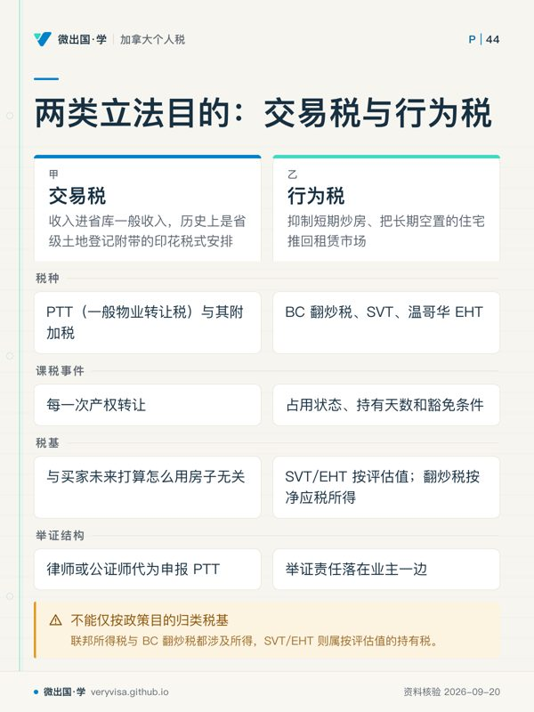
- 先看先盯第三行；同属一类的税，也可能用完全不同的计算基础。
- 易漏行为税内部也不是一种算法：空置类看价值，翻炒税看所得。
- 下一步去讲解，把一笔交易分别标成产权变动、持有状态和所得。

- 先看先看漏报后果，再回头排每项税自己的动作。
- 易漏同一套房在温哥华市内，省级与市级两套声明可能同时存在。
- 下一步去进度，把已经完成和还没完成的申报分开核。

- 先看先定位你落在哪一段，区间一变，计算方式也跟着变。
- 易漏SVT 的生活事件豁免不等于翻炒税也自动豁免。
- 下一步去练习，用买入到处置的天数跑一遍整条判断链。

- 先看先横看左栏，分清一次发生和按年重复发生的项目。
- 易漏表里没展开：外国买家附加 PTT 还有加拿大控股有限合伙；翻炒税还有关联人转让；SVT 还有出租满 6 个月。
- 下一步去路线，按买入、持有、处置三段把自己的项目摆进去。
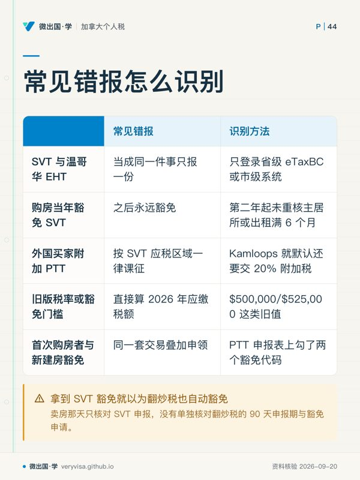
- 先看先扫右栏找现场痕迹，再反推是哪一种错法。
- 易漏旧值识别不只看门槛；0.5%/2% 同样是正文列出的旧值。
- 下一步去模考，把系统、年份、区域、版本、勾选分别设成检查点。
美国自雇与出租：自雇税、QBI 的境内门、被动亏损津贴

- 先看先看中间那一步：缺掉的是原本由另一方承担的那一份。
- 易漏这里解释的是制度为何这样设计，不是在判断某笔收入最终应缴多少。
- 下一步去讲义，对照自己的雇佣形态；边界情形交给持牌专业人士。

- 先看先看资格入口，不要从报税表上出现营业利润直接跳到扣除。
- 易漏所得税还看 FTC/FEIE；自雇税另判加美社会保障协定与覆盖证明，两问并不冲突。
- 下一步去练习，把产生场所、员工、客户、资产逐项列出后再判断。

- 先看先抓收入递减区，再确认自己是否具备津贴入口条件。
- 易漏MFS 还要区分全年分居与同居；房地产职业者走另一套独立规则。
- 下一步去练习，按持股、参与程度、报税身份与 MAGI 顺序自查。

- 先看先对照判定方式：两国处理同一房间时，入口并不是一套。
- 易漏别把美国的扣除算法当成加拿大资格门槛；折旧处理也要分开判断。
- 下一步去知识卡，分别列出两边资格条件后再核对同一房间。

- 先看先看第一列辨认错误入口，再去第二列看它会把结果带向哪里。
- 易漏第一行有两个相反方向：一个把基数放大，另一个漏掉附加税，不能混成同类错误。
- 下一步去练习，先辨认规则入口再算数字；跨境豁免问题交给持牌专业人士。
美国抵免：非退还与可退还、排队顺序、SSN 那条线、CDCC 与教育抵免

- 先看先看受益对象一行，中等收入与低收入家庭的落差最直接。
- 易漏零减去任何正数在这里都只能停在零，这正是可退还抵免要解决的盲区。
- 下一步去练习，把同一家庭放进两栏检验受益差别。

- 先看先沿减法链往下读，前面已经吃掉多少税额最关键。
- 易漏IRS 不是按比例分摊有限的税额，顺序是明文规定的。
- 下一步去练习，按这条顺序重算可用 CTC。

- 先看先看孩子一侧，SSN 与 ITIN 的分界最清楚。
- 易漏这是国会刻意划的线；ACTC 与 EITC 的退税一律要等到次年 2 月中旬以后才能放款。
- 下一步去讲义，核对合报另一人按时取得 SSN 或 ITIN 的条件。

- 先看先看中段楼层，旧表与新表的结构差别在那里最明显。
- 易漏费用上限自 2003 年以来从未指数化；雇主计划免税额度提高后，会挤占能用 CDCC 的费用空间。
- 下一步去练习，用自己的 AGI 对照两张表。

- 先看先看可退还部分，再看项目要求，这两处会把适用范围迅速分开。
- 易漏Box 1 常按「入账」而非「实付」记录；境外机构是否合格，要看能否参与美国教育部主管的联邦学生资助项目。
- 下一步去练习，带课程项目、支付凭证和 MAGI 逐项核对。
2026 年美国新扣除：四项限时扣除、SALT 时间表、2/37 削减与慈善地板
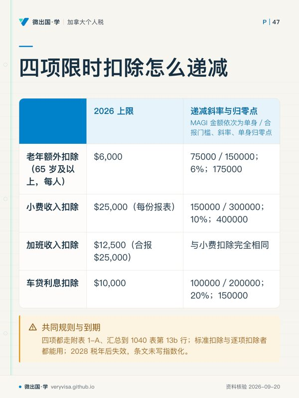
- 先看先看车贷一行，最容易看出四条递减线不是同一种算法。
- 易漏小费须顾客自愿给、金额不经谈判、由付款方决定，特定服务业不算；加班只认《公平劳动标准法》第7条强制的多出0.5倍。
- 下一步去练习分别代入四条递减线；资格不清时带收入类型问持牌专业人士。
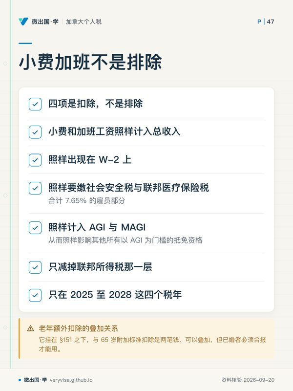
- 先看先看第一项，分类分清后，再看收入、报表与税费怎么处理。
- 易漏车贷利息还有程序硬杠：报表上不写 VIN，扣除不成立。
- 下一步去讲义核对程序条件；个案不明时带 VIN 问持牌专业人士。
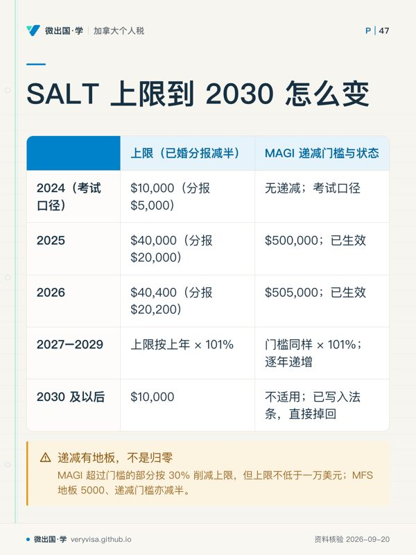
- 先看先看最后一行，它决定长期规划能不能把较高上限继续往后用。
- 易漏2030 不是日落条款，也不需要国会再动作；以四万上限做长期规划，只在 2025 至 2029 成立。
- 下一步去路线核对所在税年；跨年安排带 MAGI 与申报身份问持牌专业人士。
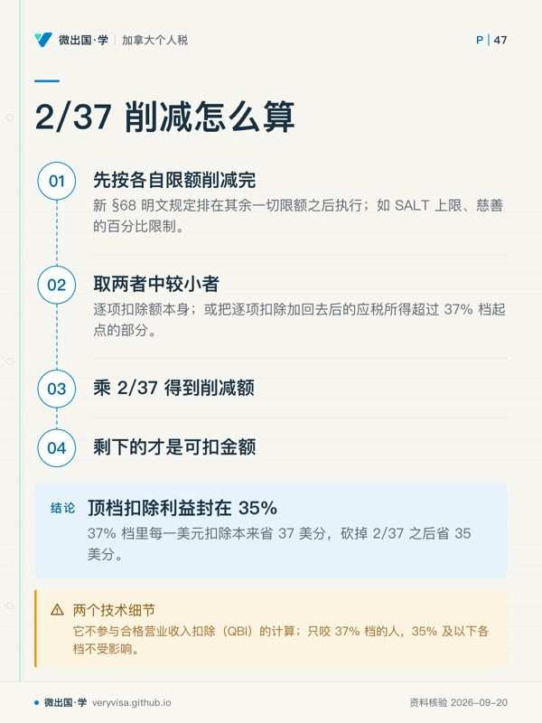
- 先看先看第二步的「取小者」，这是整条计算真正的分岔点。
- 易漏OBBBA 没有让 Pease 限制回来，而是把 §68 整条改写成了另一样东西。
- 下一步去练习按四步带数；再拿税档与 QBI 问持牌专业人士。
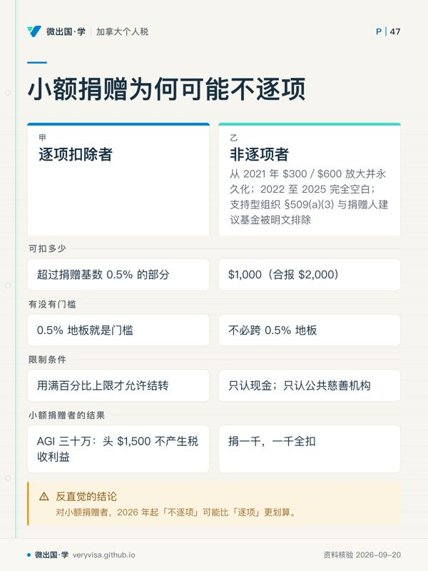
- 先看先看最后一行，同样是小额捐赠，两条路径的税收结果会分开。
- 易漏捐股票、旧衣物、里程都不算；地板卡掉的部分不是永久作废，能否结转要看当年百分比限制。
- 下一步去练习把捐赠方式和 AGI 分别代入两栏；个案再问持牌专业人士。
居家办公与 T2200、500 元礼品政策、自雇 CPP 的双轨拆分
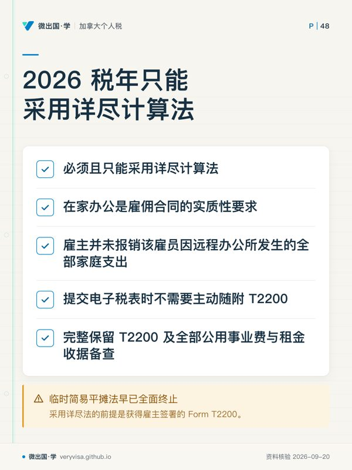
- 先看先看最上面的申报方法，再确认后续条件是否齐全。
- 易漏别把不随电子税表提交理解成无需留证，备查义务仍在。
- 下一步去练习列齐雇主证明和费用凭证，再把边界情况交给持牌专业人士。
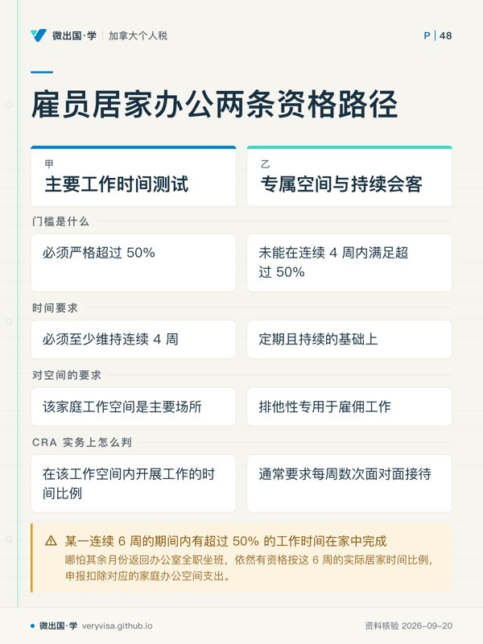
- 先看先看门槛行，把时间型与会客型判断分开。
- 易漏仅视频连线、电话沟通或偶尔数周接待一次，都不符合第二路径。
- 下一步去练习按自己的连续工作安排套一次，再把特殊空间用法交给持牌专业人士。
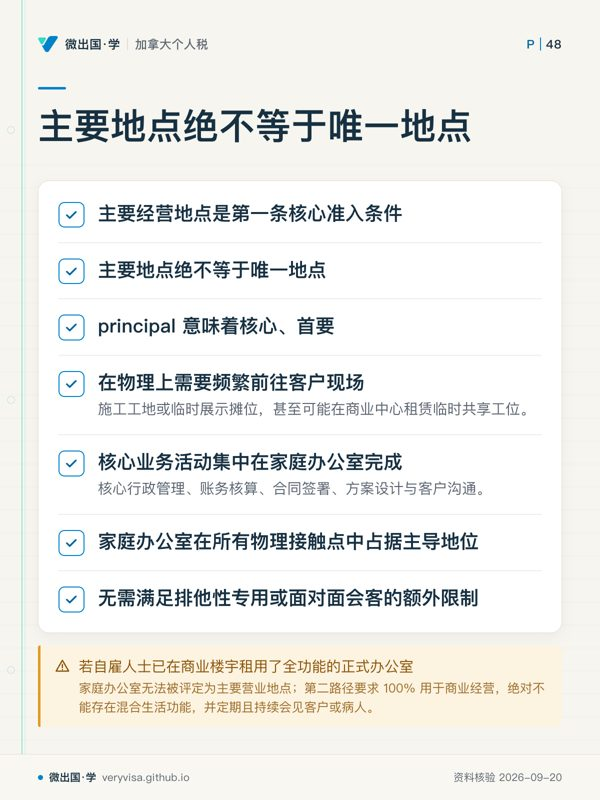
- 先看先看主要与唯一的区分，它决定外出工作是否直接出局。
- 易漏真正要比的是各物理地点的业务重心；另租正式办公室会改走第二套条件。
- 下一步去讲义列出业务活动发生地点，再把混合用途空间交给持牌专业人士。
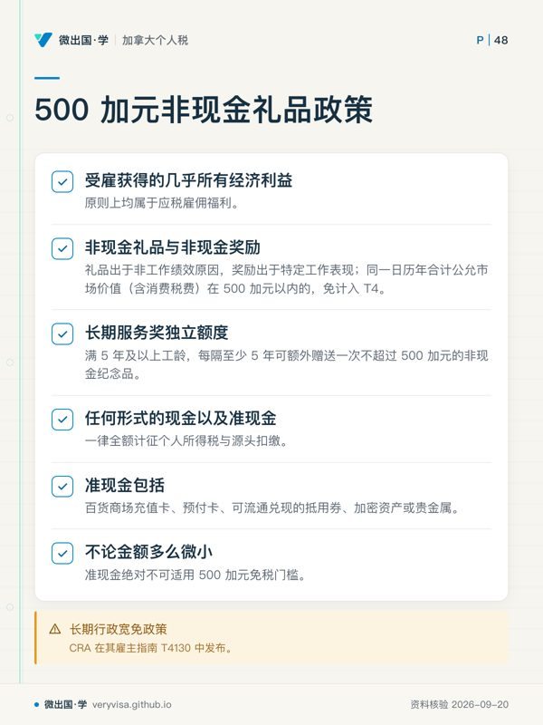
- 先看先看现金性质那一格，因为它会先决定金额判断能否继续。
- 易漏长期服务另算时，还要同时核对工龄与间隔，不能只看年度安排。
- 下一步去练习按给付场景分类，再把难判项目交给持牌专业人士。
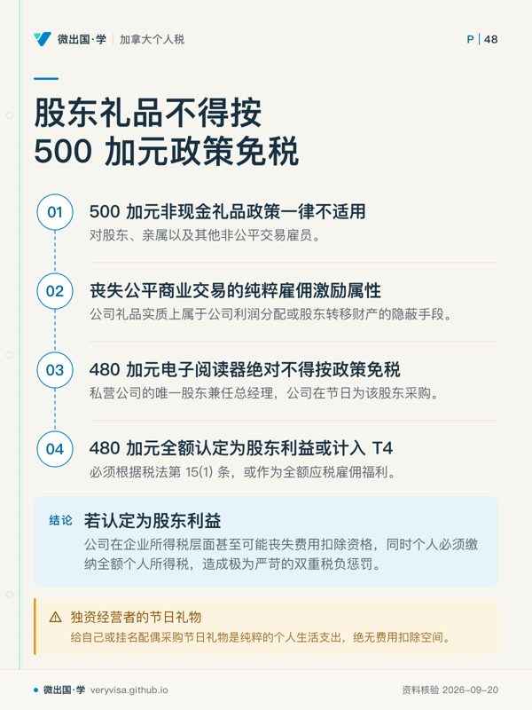
- 先看先从第一步看适用人群，再沿箭头追到个人与公司的后果。
- 易漏示例金额低于常规门槛也不改变主体排除，关键先看收礼人的关系。
- 下一步去讲解核对身份和所得归类，再把公司费用扣除问题交给持牌专业人士。
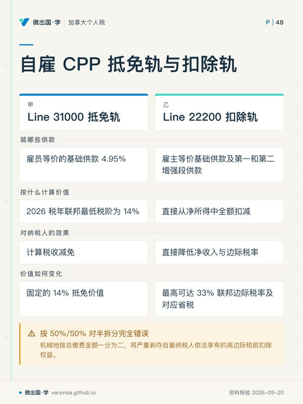
- 先看先看供款构成，再看两栏如何换成不同税务价值。
- 易漏对半分的直觉来自双重身份，但增强段并不按这套直觉归集。
- 下一步去练习按 Schedule 8 分轨，再把高收入边际效应交给持牌专业人士。
GST/HST 小供应商双重测试、快速法汇缴率、ITC 三档凭证与分期预缴两年测试

- 先看先看右栏的起算点，突发超额的处理不等到季度结束。
- 易漏零税率应税品计入应税商品与服务，免税品不在其中。
- 下一步去练习，分别套两种超额场景，再问持牌专业人士关联实体如何合并。

- 先看先看业务排除项；金额合格也不代表业务形态合格。
- 易漏这一上限统计小企业及其关联方，不只看单一经营主体。
- 下一步去练习，分别判断规模与行业资格，再让持牌专业人士核对平台情形。

- 先看先顺着收款到汇缴看资金去向，最后再看额外抵减。
- 易漏资本财产例子包括 Class 8 设备、Class 10 货车，别和水电、耗材一并处理。
- 下一步去练习，拿一笔含税收入演算，再把资本财产问题带给持牌专业人士。

- 先看先对业务形态，再读对应税率；不要只按行业名称猜。
- 易漏转售商品采购成本至少占总收入的 40%，否则不能只凭「卖货」归入这一类。
- 下一步去练习，拿收入与采购结构判断类别，再请持牌专业人士核对常设机构。

- 先看先看中档和大额档新增字段，审计风险集中在身份与税号信息。
- 易漏大额档还要买方完整法定姓名或登记商号、逐项详细描述，并分列各级税率与实际税额。
- 下一步去练习，拿三张不同金额收据逐项核验，再把可疑税号交给持牌专业人士。

- 先看先核历史那一格，它决定间隔一年后是否还会触发。
- 易漏RRSP 供款只是示例里欠税降为零的原因，不是测试本身的额外条件。
- 下一步去练习，把三年净欠税额排出来，再向持牌专业人士核对预缴安排。
CCA 车辆类别、2026 乘用车上限的法定状态、BC PST 梯档与 RIIP 时间表
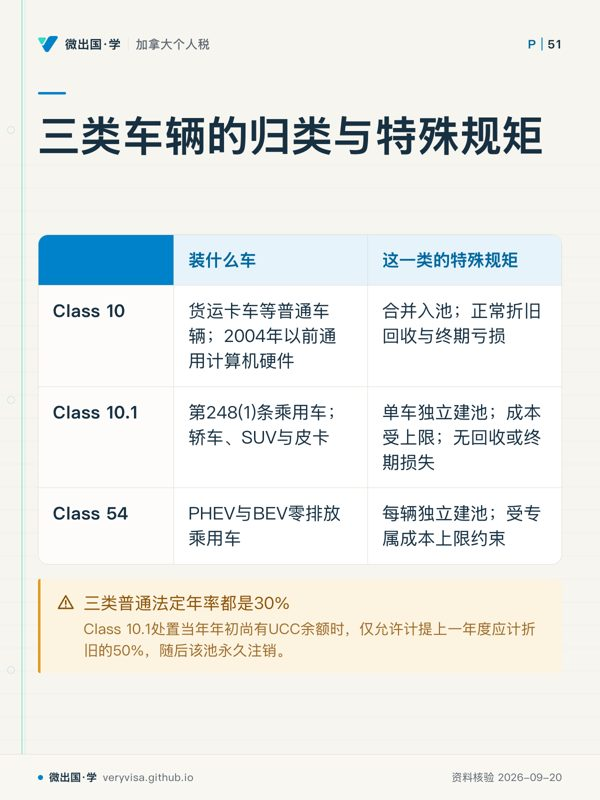
- 先看先看Class 10.1这一行，它和普通车辆的清算方式不同。
- 易漏分类先于折旧计算；车型看似相近，也可能因为税法定义落入不同类别。
- 下一步去练习，用车辆类型判断类别；边界情形带定义问题找持牌专业人士。
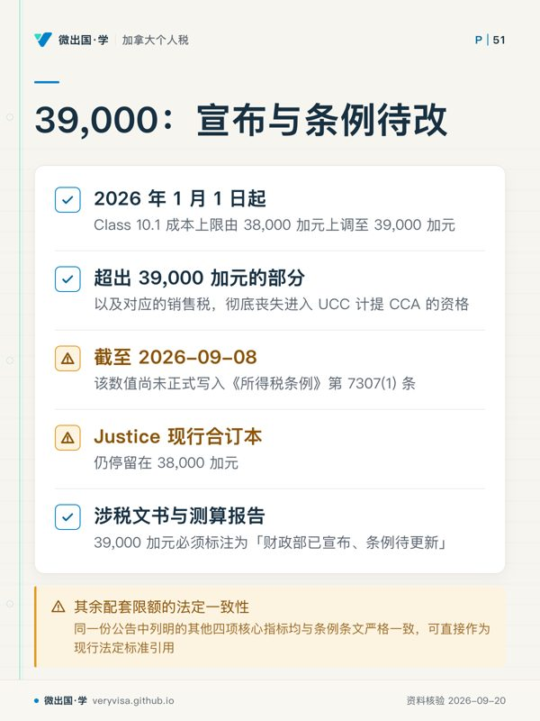
- 先看先看日期节点；它决定报告里能不能把公告口径写成现行条文。
- 易漏图中未展开各项配套限额；引用具体金额时仍要逐项核对对应条文。
- 下一步去讲义核对原文，再带具体引用场景找持牌专业人士。
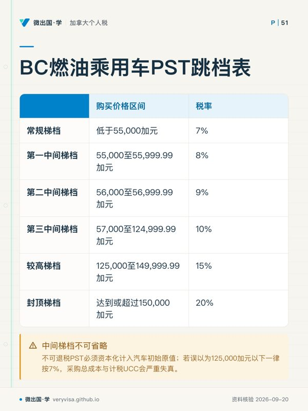
- 先看先看中间三行，那里最容易在模型里被直接略过。
- 易漏零排放汽车（ZEV）与私人间二手车交易另有独立的PST征税附表，不可与商业车商燃油车混同。
- 下一步去练习，按购买价格判断所在梯档；特殊交易再找持牌专业人士。
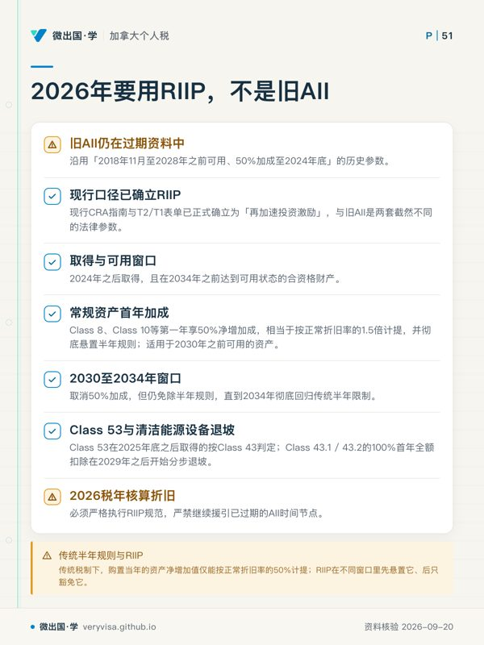
- 先看先看两个时间窗口，它们决定首年折旧待遇如何变化。
- 易漏不要把「加成取消」读成「半年规则立即恢复」；两个窗口不是同一件事。
- 下一步去练习，按取得日与可用状态判断窗口；不确定再找持牌专业人士。
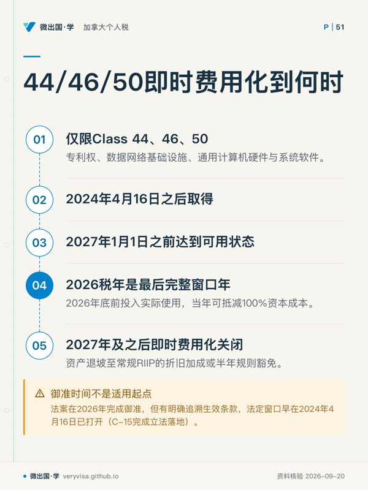
- 先看先看最后两步，判断窗口关闭的位置，再回头检查前面的日期门槛。
- 易漏取得和投入使用是两道条件，不能只看购买发生在哪个税年。
- 下一步去练习，把类别、取得日与可用状态放到同一时间线上判断。
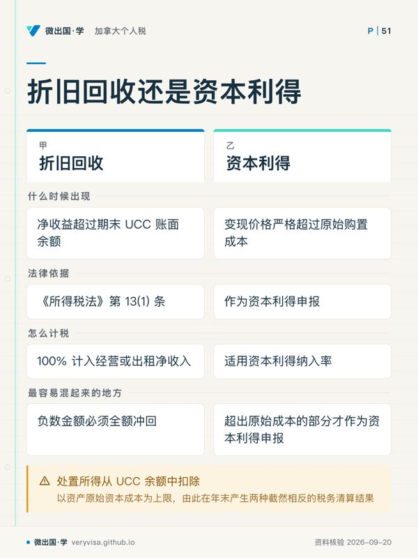
- 先看先看第一行，分清两侧触发门槛，再往下看计税性质。
- 易漏图外没有展开终期损失；这张对照只处理折旧回收与资本利得。
- 下一步去练习做处置题，把年末池余额和原始成本分别标出来。
CPP2 的上下边界、BC EHT 的断崖与地点红利、NPO 的 T2／T1044／T3 三张网
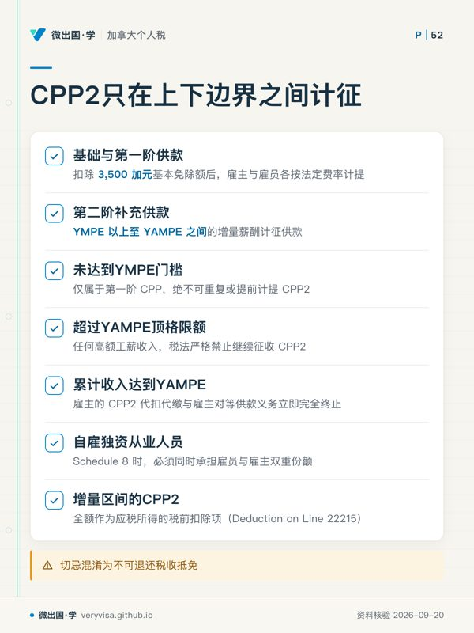
- 先看先从两道门槛之间开始读，再看两侧停止条件。
- 易漏第一阶供款还涉及部分税收抵免与部分扣除。
- 下一步去练习，带着自雇申报问题找持牌专业人士。
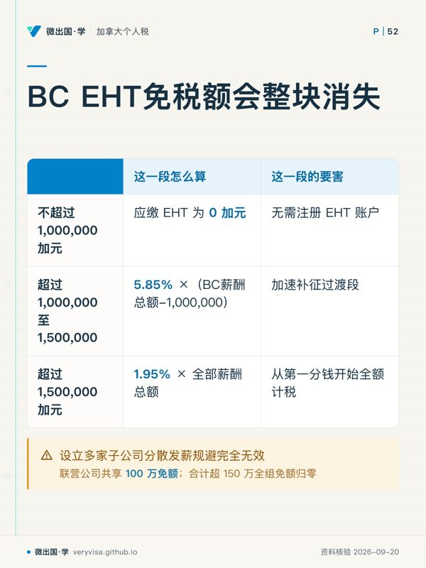
- 先看先盯中间段的计算方法，再对照越过上限后的变化。
- 易漏这套三段式规则适用于2024、2025以及2026税年。
- 下一步去练习，带着联营架构和BC发薪合计找持牌专业人士。
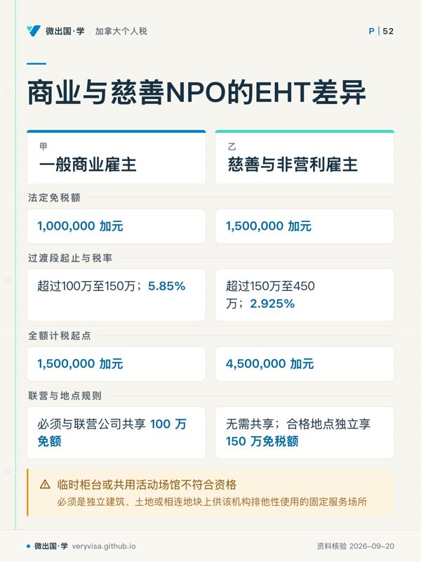
- 先看先看最后一行，运营安排决定额度能否分开计算。
- 易漏慈善及NPO越过全额计税起点后，才按标准税率全额计缴。
- 下一步去知识卡，带着固定服务场所的使用方式找持牌专业人士。
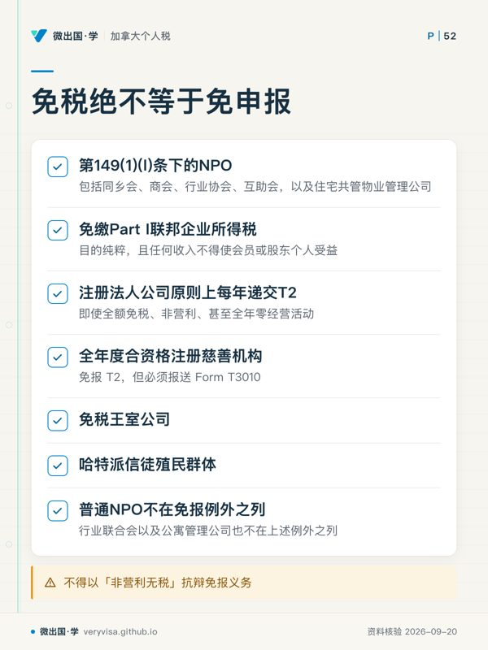
- 先看先确认组织是否属于注册法人，再看那三类狭窄例外。
- 易漏公寓法团一旦遭遇CRA专项清理，会面临行政整改压力与潜在合规风险。
- 下一步去练习，带着历年T2申报情况找持牌专业人士。
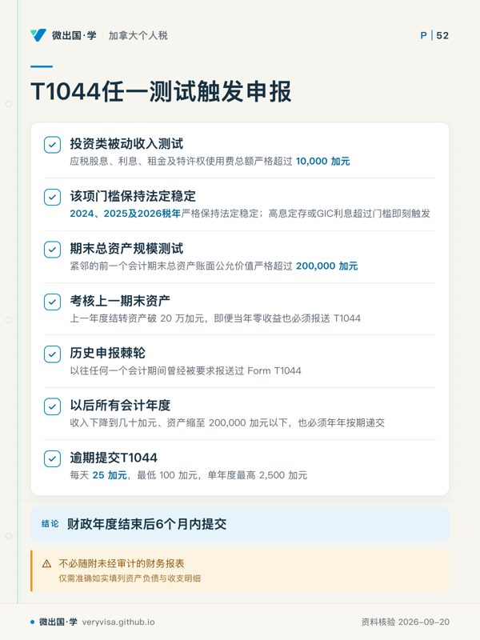
- 先看先找自己落入哪一种测试，再看历史上是否曾经触发。
- 易漏三项测试是「或」的关系，不是三项同时满足。
- 下一步去练习，带着前一期资产和历年T1044报送情况找持牌专业人士。
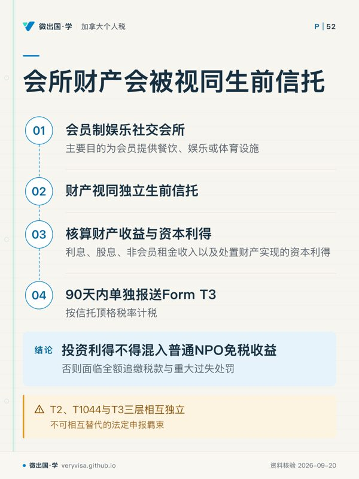
- 先看先抓住财产被单列这一层，再顺着收益到申报时点。
- 易漏高尔夫俱乐部、帆船游艇会、网球社交会所都属这类。
- 下一步去讲解，带着会所投资和租金收入找持牌专业人士。
CPP、EI 与雇佣支出：Schedule 8 的五段算法、超缴怎么要回来、T777 上哪些钱才扣得掉
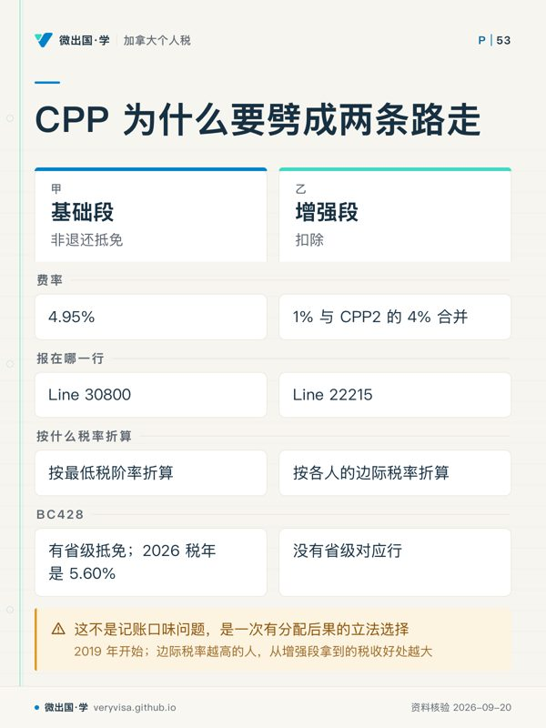
- 先看先看 BC428 那一行，它把两条税务路径的后果拉开了。
- 易漏增强段压低的是应税收入本身，所以联邦与省两侧自动同时受益。
- 下一步去练习，用一张 T4 分别追到两条申报行。
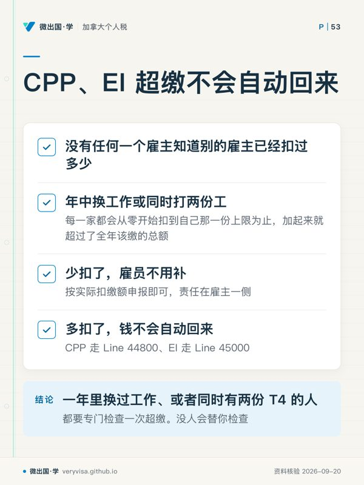
- 先看先看两条 Line，能最快确认多扣后往哪里主张。
- 易漏发生超额并不代表谁做错了，这是分散代扣制度的固有盲区。
- 下一步去练习，把一年里的 T4 放在一起检查超缴。
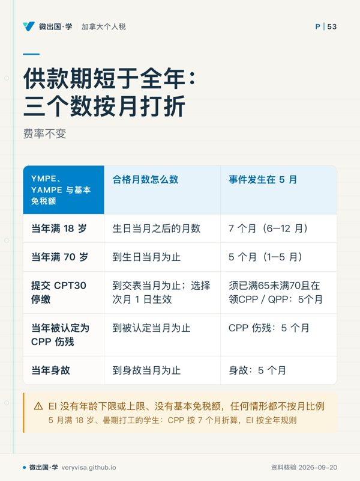
- 先看先看 18 岁和 70 岁两行，起算方向最容易看反。
- 易漏计算方法是各除以 12 再乘合格月数，不是改供款率。
- 下一步去练习，先判合格月份，再回到 Schedule 8。
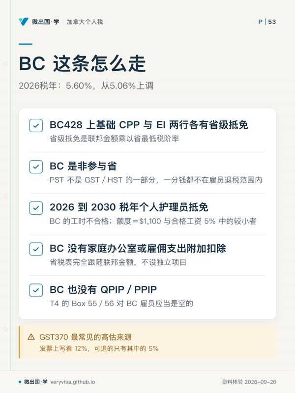
- 先看先看销售税这一项，两套税并行时最容易把总税率当可退额。
- 易漏护理员工资并非各地都合格，三地已另行签署加薪协议。
- 下一步去练习，把省税表、GST370 与 T4 分开核对。
养老金与投资收入怎么进 T1：每张 slip、每个框，对应哪一行
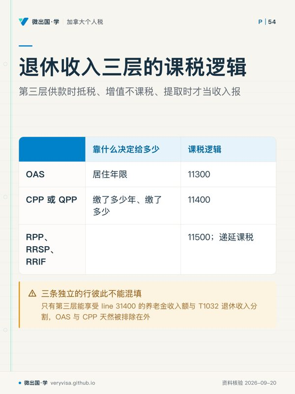
- 先看先看最下行右格，先抓住个人注册账户为什么和前两层走不同规则。
- 易漏身故当年或账户被注销当年，剩余余额有「视同收到」条款；直接转移存在例外。
- 下一步去练习，拿一笔退休收入先判是哪一层，再核对对应行；复杂转移再找持牌专业人士。
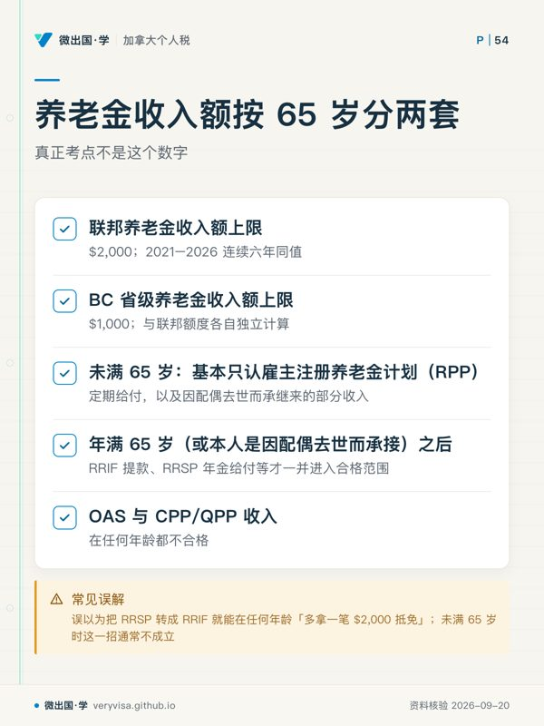
- 先看先看两套口径的分界，再回头对照自己的领取资格。
- 易漏三条收入行彼此不能混填，也不能互相替代抵免资格。
- 下一步去讲义核对自己的领取资格，再问持牌专业人士该走哪一行。
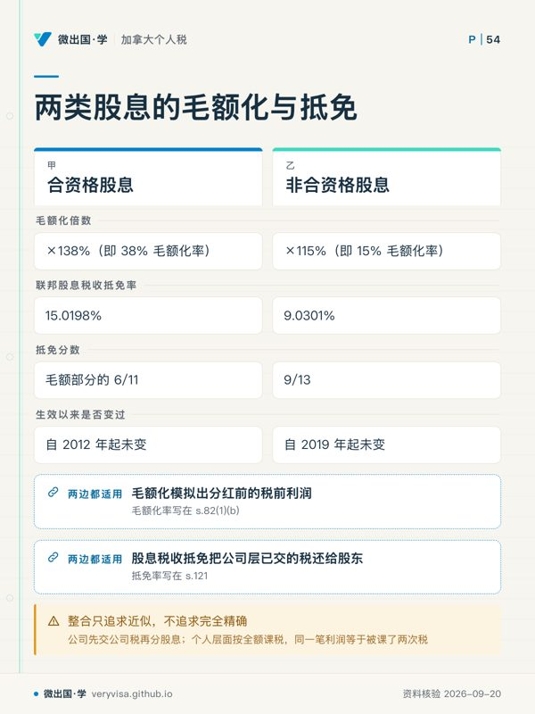
- 先看先横看第一行，两个倍数能最快确认你没有把股息类型混用。
- 易漏比例长年没变不代表机制不会变；历史上曾跟着公司税率调整。
- 下一步去练习，先辨认股息类型，再按同一栏一路取参数；省份差异再找持牌专业人士。
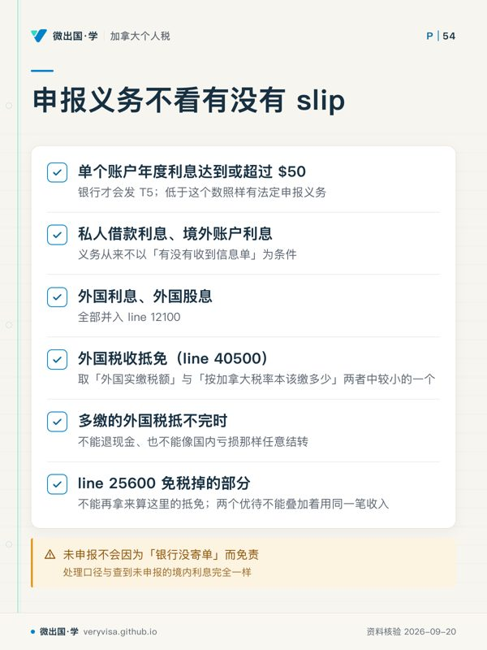
- 先看先看最上格，分清银行是否发单与个人是否要报是两件事。
- 易漏外国利息、外国股息没有加拿大 T5/T3 这类优待安排。
- 下一步去练习，逐笔区分申报与抵免；复杂协定适用再找持牌专业人士。
「其他收入」与社会福利：哪些要报、哪些报了再扣、哪些根本不报
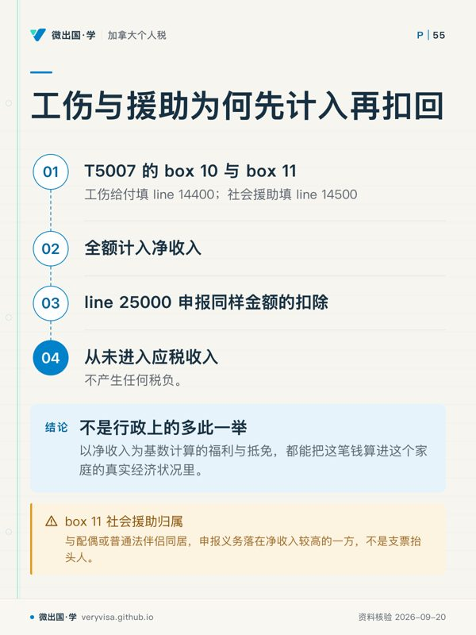
- 先看先看扣回后的结果，再回看前面的计入动作为何仍保留。
- 易漏两人净收入相同则由 T5007 上登记的那个人申报。
- 下一步去练习，带着「到底由谁申报」找持牌专业人士。
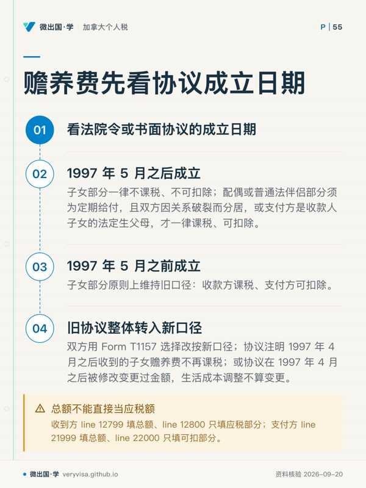
- 先看先看日期节点后的处理线，旧协议不能直接套现行通则。
- 易漏一份 1995 年成立、之后从未修改过的离婚协议，今天仍然按旧口径。
- 下一步去练习，带着「成立日期与后续修改」找持牌专业人士。
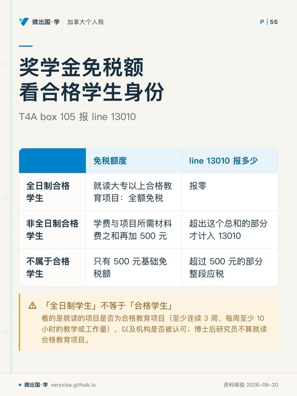
- 先看先看第三行，它最能说明身份判断不是金额判断。
- 易漏中小学阶段的奖学金与助学金，不论金额大小，一律不课税。
- 下一步去练习，带着「项目是否合格」找持牌专业人士。
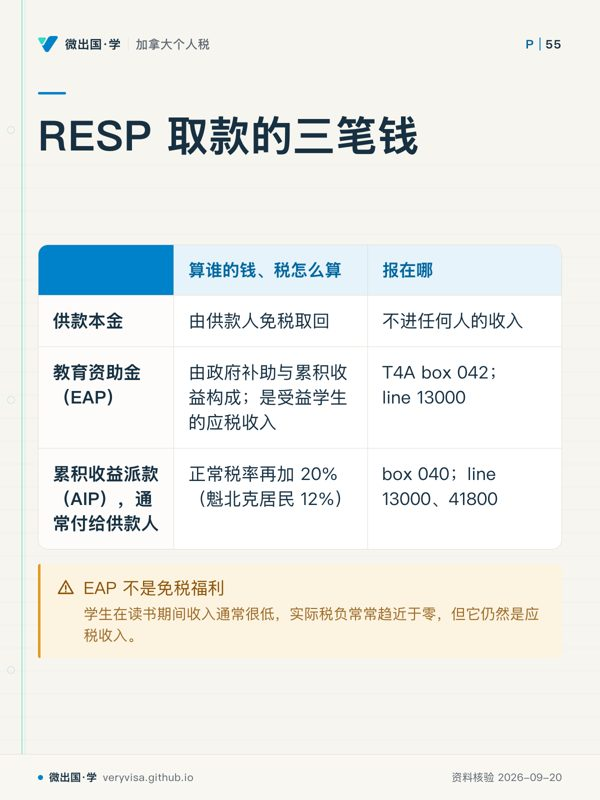
- 先看先看第一栏，先分清钱最终算在谁名下，再看申报位置。
- 易漏AIP 是账户里没有被 EAP 用掉的利息部分。
- 下一步去练习，带着「取出的是哪一笔钱」找持牌专业人士。
扣除项：净收入与应税收入之间的那道分水岭——RRSP、托儿费、搬家费与赡养费
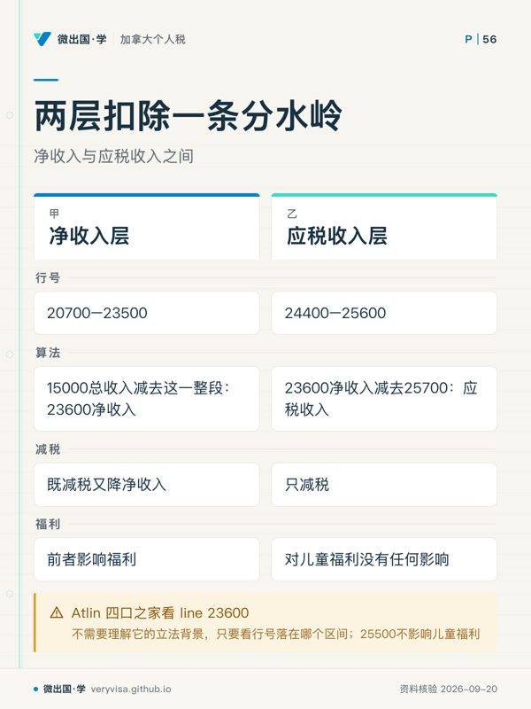
- 先看先看「算法」一行，它把两栏真正分开的计算位置说清楚。
- 易漏同样能降税，不代表家庭给付会跟着变；先确认给付采用哪一个收入基数。
- 下一步去讲义，把手头项目的申报行带去问持牌专业人士它会不会改变给付计算。
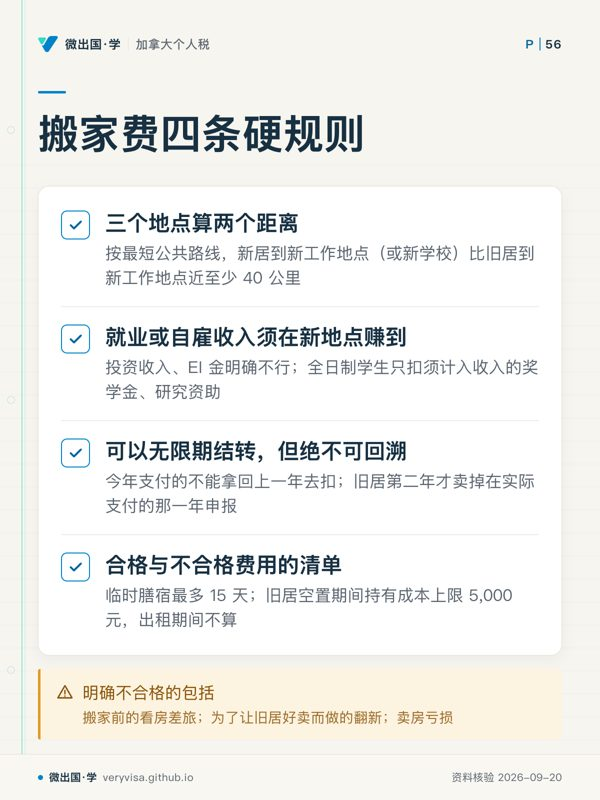
- 先看先看第一项的比较方向；它不是按迁居里程本身来判。
- 易漏建筑业技工与学徒另有临时搬迁扣除，同一次搬家不能两边都扣。
- 下一步去练习，用三处地址和收入来源逐项判断；边界情形带去问持牌专业人士。
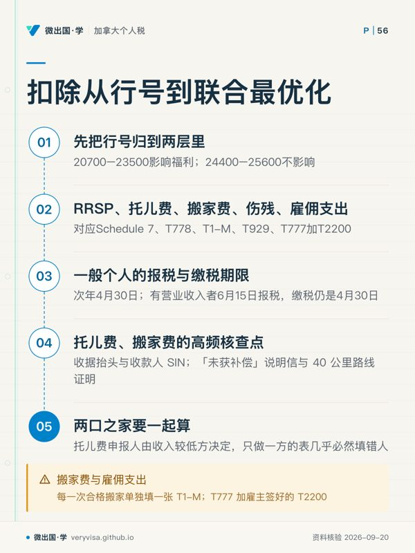
- 先看先看最后一步：家庭内部谁来申报，会影响前面准备的资料最后放到谁名下。
- 易漏RRSP 供款窗口与一般申报日不是同一天；托儿费和伤残支持还要看实际支付年份。
- 下一步去进度，把自己的表、收据和日期排成清单；归属不清时问持牌专业人士。
非退还抵免总表：抵免率从 15% 掉到 14% 之后，每一格该怎么算
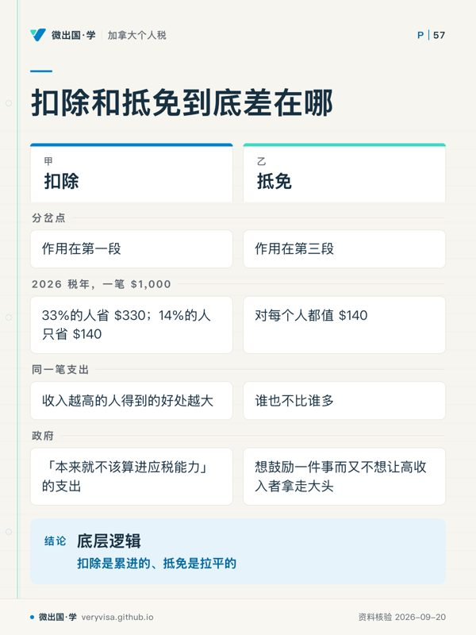
- 先看先看第二行的算法差异，它直接解释后面谁更受益。
- 易漏CPP 供款不是只走一路：基础段走抵免、增强段走扣除。
- 下一步去练习，判断新案例该归入算收入还是算税。
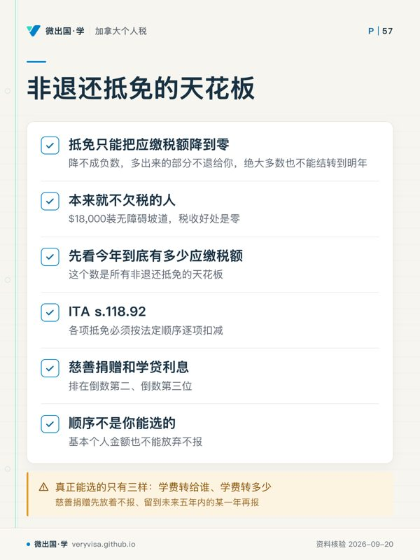
- 先看先看第三项；先算可用空间，才能判断后面的额度是否会落空。
- 易漏刚来加拿大、当年只工作两个月的人，即使符合十项条件，也只能抵到零。
- 下一步去练习，先算本年可吸收空间；转移或延后申报再问持牌专业人士。
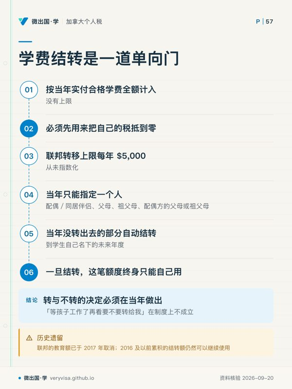
- 先看先看末端两格，因为选择权是在那里收窄的。
- 易漏这一额度在法定顺序里排得很靠后，图里没有展开前面各项抵免。
- 下一步去练习，把使用、转出、留下三种去向算清，再带家庭安排问持牌专业人士。
- 先看先看第二、三步的衔接，因为这里最容易只做后半边。
- 易漏选择医疗费申报人时还要确认可吸收的税额，不能只看谁的净收入较低。
- 下一步去练习，拿自己的表格与凭证顺着走一遍；遇到取舍再问持牌专业人士。
医疗费用与慈善捐赠：任意 12 个月怎么选、门槛为什么是取小、捐赠费率怎么跟着降税走
- 先看先看正中的格子，它不跟税阶变化，最适合作锚点。
- 易漏官方捐赠页仍按 2025 口径；遇到不一致，先核对它回答的是哪一年。
- 下一步做练习，再把年度选择问题带给持牌专业人士。
- 先看先看第二行：这里最容易把两种机制混成一种算法。
- 易漏两者都排在非退还抵免靠后位置，前面的抵免已把税抵成零时可能浪费。
- 下一步去练习，分别判断窗口选择和延后申报；复杂凭证问题找持牌专业人士。
- 先看先看带金额的一格，它决定继续增加是否还有效果。
- 易漏生态敏感土地的结转年限延长到十年；这里没有展开一般捐赠的留用规则。
- 下一步去练习，把收款对象与资产交付方式分开判断；复杂交易找持牌专业人士。
退还抵免与不上表的福利：算在 T1 上的钱 vs 报了 T1 才有的钱

- 先看先看第二行左格，四个行号划出第六步里的这一层。
- 易漏第六步还混排 line 43700 与 line 47600；那两笔不是抵免，是已缴款。
- 下一步去练习，带着「福利为何不在退税单」找持牌专业人士。

- 先看先看中间两个日期区间，它们把评税完成与后续发放错开。
- 易漏收入在 2025 年下降，要等到 2026 年 7 月才看到福利上调；上涨则看到下调。
- 下一步去练习，带着「收入变化何时反映福利」找持牌专业人士。

- 先看先看 RC66 那行，它区分报税信息与孩子在 CRA 登记。
- 易漏孩子数量变化不能靠改报税表更正；正确路径是 RC66 或网上账户。
- 下一步去练习，带着「哪种变化触发哪张表」找持牌专业人士。

- 先看先看年龄那格，它先排除不能累积额度的人。
- 易漏逐行页在核实日仍标 2025 税年，2026 税年那一版要到 2027 年初才上线。
- 下一步去练习，带着「我的 CTCL 是否可用」找持牌专业人士。
学生报税：为什么零收入也要报、学费抵免的转移与结转怎么选最优
- 先看先看右栏最后一格，避免到了报税季才发现来不及。
- 易漏合格学费在 line 32000（Schedule 11）汇总，最终计入 line 32300。
- 下一步去练习，带着当年是否转让的问题找持牌专业人士。
- 先看先看前三项，把贷款性质和银行重新协商分开判断。
- 易漏政府学生贷款包括各省对应法律；谁实际付钱不影响申报资格。
- 下一步去练习，带着是否被银行重新协商的问题找持牌专业人士。
- 先看先看国际学生那一项，因为两件事要分别判断。
- 易漏搬家费只能从需要计入收入的奖励类收入里扣除。
- 下一步去练习，把自己的报税表逐项对照；不确定时找持牌专业人士。
雇员车辆 2026：合理津贴、私用福利、CCA 与租赁利息四套上限为什么不能串用
- 先看先看第三行两格，分类对象和税年示例不是同一件事。
- 易漏普通车的新购成本上限，申报前要回当年执行文本。
- 下一步去讲义核对买车、租车或按公里付钱；合同拿不准时问持牌专业人士。
- 先看先看第三步的算式，它决定哪部分落在合理范围。
- 易漏同一段行程会跨两档；地点若在三个地区，费率表也会换。
- 下一步去练习重算自己的公里分段；边界拿不准时带行车日志问持牌专业人士。
- 先看先看第二步，那里决定三类计算各自读取哪一组公里。
- 易漏旧租约要回到签约时点取参数；新买车辆还要分普通与零排放。
- 下一步去路线按自己的车辆归属和付款方式走一遍；记录不完整时带资料问持牌专业人士。
- 先看先看带签约年份和申报年份的那项，日期错位会直接带错限额。
- 易漏零排放乘用车的已生效限额不在普通车的执行文本缺口里。
- 下一步去知识卡逐条核自己的凭证；仍不确定时带租约、日志问持牌专业人士。
破产那一年怎么报税：一天变两个纳税年度、受托人的第三张表，与 RRSP 保得住、TFSA 保不住的分界线
- 先看先看中间一行，判断这个年份是否会出现第三张表。
- 易漏此前年度未发的退税还要核对是否已依规寄给受托人。
- 下一步去讲义，带着自己的宣告日期和自雇情况找持牌专业人士核对。
- 先看先看结转两项，它们最容易因为前后期间交叉而被重复使用。
- 易漏扣除额仍受当年正常供款限额约束；图里只画了时间窗口。
- 下一步去练习，用一组供款、抵免和结转资料逐项判断该落在哪张表。
- 先看先看第一行，它解释为什么两边后续的财产处理不一样。
- 易漏转移前还要另核供款额度、偏颇清偿和低价转让等规则。
- 下一步去知识卡，带着账户类型和转移时间找持牌专业人士核对。
- 先看先看倒数第二格，那里是整个流程的分岔点。
- 易漏退税与结转的收尾不在图里；还要确认哪些结转已用掉或从免责日起被冲销。
- 下一步去路线，带着个人的申报记录和债务情况找持牌专业人士核对。
身后财产清算、CPP/QPP死亡福利、BC省遗产认证费阶梯与视同处置合规
- 先看先看最下方一行，它决定联邦加码能不能照搬到魁省。
- 易漏跨省搬迁、双重供款历史个案，还要分账核对 CRA 与魁北克税局凭单。
- 下一步去练习，带供款历史和领取顺位问题找持牌专业人士。
- 先看先看三段对应费用，关键是每段各用自己的口径，不要先套一个总费率。
- 易漏高段原文同样写有不足部分也要计费，图里未展开。
- 下一步去练习，带哪些资产会进入认证程序的问题找持牌专业人士。
- 先看先看茶几例子，它把计税成本重设后如何产生利得直接算出来。
- 易漏物业生前符合主要居所资格时，才可能全额或部分豁免资本利得税。
- 下一步去练习，带财产分类和补报时点问题找持牌专业人士。
RESP 与 RDSP：政府配钱的两个账户怎么用满、取钱时税落谁头上
- 先看先看 DTC 那一格，因为它决定前面的配比能否真正用上。
- 易漏核准期满未续、或被撤销，都可能让这把钥匙失效。
- 下一步去讲义，再带 DTC 核准状态与续期问题找持牌专业人士。
- 先看先看中间那一行；这里最容易把两类计划混在一起。
- 易漏转账入不受供款期限限制。
- 下一步去练习，再带新增受益人与老账户年限问题找持牌专业人士。
- 先看先按款项定位行，再横着找对应文件和申报归属。
- 易漏AIP 转入 RRSP 免预扣税，要先请承办机构直接转账。
- 下一步去练习，再带提取和特别税的填报问题找持牌专业人士。
- 先看先从最早节点往后读，注意哪些变化已经定型、哪些还会到期。
- 易漏本页把复核日期定在到期前一个月，不是常规的次年 1 月底。
- 下一步去进度，再带代理开户是否延期的问题找持牌专业人士。
加密货币怎么报税，以及专门劫富的「第二台计算器」：处置事件、CRA 改口径与 AMT 大改

- 先看先看中间两格，抓住同一交易为何会落入不同收入性质。
- 易漏这些因素原本用于判断证券买卖性质；交易金额本身不是判断标准。
- 下一步去练习，用自己的交易记录整理事实后找持牌专业人士判断。

- 先看先看两条从「无」变为单列或并列的行，最能看出扩展方向。
- 易漏用代币买东西时，付款方与收款方都要各自计价。
- 下一步去讲解，再问持牌专业人士自己的事件应归入哪一类。

- 先看先看第三、四步，时间范围之外还有期末持有条件。
- 易漏正本还包括「有权取得该财产」，不能只看窗口内买回。
- 下一步去练习，再带成交记录问持牌专业人士是否触发表面亏损。

- 先看先看股息那行，因为它不是比例折减，而是被整条排除。
- 易漏常见 s.126 境外税收抵免另按 s.127.54 计算，不在这四行里。
- 下一步去讲义，把自己的抵免项目逐项对照后再问持牌专业人士。
短租收入怎么定性、GST/HST 什么时候找上门、以及一份『已经废止但你可能还欠着』的申报表
- 先看先看中间一行，那里最容易把销售税和费用限制混用。
- 易漏符合每日费用限额的住宿另有豁免；旅馆、汽车旅馆等类似场所有特定排除。
- 下一步去讲义，带名称相同为何不能推出同一税务结果的问题找持牌专业人士。
- 先看先看第二行，先分清房源资格与备案状态。
- 易漏豁免对象还包括特定 strata 酒店、分时度假物业、房屋互换等。
- 下一步去路线，带地方要求与联邦费用扣除如何衔接的问题找持牌专业人士。
- 先看先看最后的结论条，历史规则现在只用来处理没清完的旧账。
- 易漏Justice Laws 至2026年7月仍把它列为现行法。
- 下一步去练习，带过去历年是否仍欠申报的问题找持牌专业人士。
BC 省税与省级抵免：BC428、BC479，与 2026 年那次「加税同时加抵免」

- 先看先看「退款」一行，分错地方就是分错钱。
- 易漏长者与残障人士家居翻新抵免也在这张表上。
- 下一步去练习，带「抵免落在哪张表」去问持牌专业人士。

- 先看先看中间那项比较，因为三个动作要合起来读。
- 易漏绝对金额上限固定，越低收入的人越被抵免那一侧对冲掉。
- 下一步去练习，比较自己的应税收入和基础金额；再问持牌专业人士。

- 先看先看百分比，再看美元金额；两种变化分开看。
- 易漏复查的不是数字，而是这条暂停有没有被后来的预算改掉。
- 下一步去练习，把金额变化和百分比变化分开；再问持牌专业人士。

- 先看先看现行：再延一次、原地不动、干脆永久化。
- 易漏看到考试口径写「延长至某年底」，一律当作已过期处理，回官方页确认现行到期日。
- 下一步去进度，复查现行到期日；再问持牌专业人士。
十三省与地区 2026 税年一览：税阶、BPA、428/479 与谁在变——除魁北克外的全景索引
- 先看先看第二行，它决定后面计算从哪里起步。
- 易漏本课在魁北克这条线上也只做到「知道它自成体系」这一层。
- 下一步去讲义，带独立申报口径的问题找持牌专业人士。
- 先看先看第二行，三地把两类内容放在一张表里，最容易和上行混。
- 易漏这不是巧合式的命名差异，各法域自己决定要不要单独设可退还抵免项目。
- 下一步去练习，先认表再判归属；拿不准时带法域名称问持牌专业人士。
- 先看先看开头那格：先定归属，后续才好选通道与表。
- 易漏移出、死亡和非居民等亦须按专门规则，这张图没有展开。
- 下一步去练习，先做归属判断；特殊身份带具体情况问持牌专业人士。
阿尔伯塔 2026 省税：8% 新档、六档怎么对齐，以及为什么不能拿 2024 的第 1 档去对 2026 的第 1 档
- 先看先对照首行两个日期，判断差异来自哪个来源。
- 易漏两边均为官方资料，正文没有替你裁定哪边正确。
- 下一步去讲义核对所报税年的口径；再带工资单问持牌专业人士。
- 先看先看 26000 行那项，它决定省级计算从哪里接上。
- 易漏自雇或有多处常设机构、全年在不止一个法域有应税业务收入时才看分摊。
- 下一步去练习把身份与居住地分开判断；跨境情形带问题找持牌专业人士。
- 先看先扫每项前半句，确认自己有没有按那种方式填表。
- 易漏数字只在对应税年和行次下成立，不要把不同年份或不同输入混在一起。
- 下一步去练习逐项对照自己的填法；有疑问带报表找持牌专业人士。
爱德华王子岛 2026 省税：附加税拆进六档之后，20% 是顶档不是再乘一次的乘数
- 先看先看第三行，它直接区分两套计算顺序。
- 易漏省能动税率、税阶与抵免，动不了应税收入的定义。
- 下一步去练习，带着「旧机制是否还会叠算」找持牌专业人士。
- 先看先看中间一行，最容易把相邻年份当成同一结构。
- 易漏历史资料按同行抄数会出错，新增一层后收入区间已经错开。
- 下一步去练习，带着「跨年抄表时先核什么」找持牌专业人士。
- 先看先看最后一项，因为省份判断错了，后面税率都失去前提。
- 易漏反方向也会错：在岛上却按月份和旧省分摊。
- 下一步去练习，带着「年底地点与经营地点怎么区分」找持牌专业人士。
安大略 2026 省税：五档看起来温和，真正的累进在附加税里；150,000 与 220,000 三年没动
- 先看先看税基位置，它解释名义顶档为什么看起来便宜。
- 易漏评税通知书上的省税可能高于自测，差额正好落在第二层。
- 下一步去练习，用例题核对后再看评税通知书。
- 先看先看两段不动的刻度，抓住历史变革里被胶水粘住的地方。
- 易漏附加税门槛每年要回当年 ON428，不能留考试口径那年的数。
- 下一步去练习，用客户的税核对门槛。
- 先看先看生育治疗抵免这一格，因为它不能从名义五档判断归类。
- 易漏低收入端有独立退款式项目，也不能因此跳过省税报表。
- 下一步去练习，用例题核对抵免。
曼尼托巴 2026 省税：三档没变，47,564 与 101,200 和去年相同不是抄错；BPA 从 20 万净收入开始往下砍
- 先看先看中间一行右格，那里解释跨度大的直接后果。
- 易漏省表第 1 行只抄应税收入，税阶用曼尼托巴自己的三条线。
- 下一步去练习，把历史数与现行数分开算；有差额就找持牌专业人士复核。
- 先看先看第三项，先分清判断口径，再看收入区间。
- 易漏少报省税按 CRA 规定利率计息，一般个人正常复评期是评税通知书发出之日起三年。
- 下一步去练习，把两种收入分别带入；结果异常时带问题找持牌专业人士。
- 先看先看前两项，确认两张表各装哪类抵免，再看名称变化。
- 易漏省不自设税务局，报表由 CRA 一并受理，省税与联邦税出现在同一张评税通知书上。
- 下一步去练习，用现行名称找行；遇到旧口径资料时带问题找持牌专业人士。
纽芬兰与拉布拉多 2026 省税：全国最多的八档，21.8% 要过一百万才碰到；全年 BPA 不是七月补扣那个 15,000
- 先看第 7 档上限按行对齐，2024 列是官方历史。
- 易漏把 21.8% 乘到整份收入上是方向相反的多报。
- 下一步练习：2026 年客户的税。
- 先看看 479，那张表多了两个定向项目。
- 易漏2026 税年沿用，具体金额回当年表，不把 2025 的福利额当 2026。
- 下一步练习：具体金额回当年表。
- 先看看扣缴，报税时以 CRA 全年税阶为准。
- 易漏不能把纽芬兰与拉布拉多八档套到整份收入上再假装分摊。
- 下一步练习：分摊之后，每个法域仍按自己的表走。
新不伦瑞克 2026 省税：四档从 2023 就定了，门槛每年在涨；没有独立 479，别按岛上的六档来套
- 先看先看右栏第二行，那里最容易看出是不是套了旧五档。
- 易漏省必须接受联邦定义的应税收入——报表第 26000 行——作为自己的税基。
- 下一步去练习，带「该用哪套税阶」找持牌专业人士。
- 先看先看最上面的起点年份，后面各项都要在同一张尺子上读。
- 易漏一般个人的正常复评期是评税通知书发出之日起三年。
- 下一步去模考，带「历史结构怎么换表」找持牌专业人士。
- 先看先看中间，先判断你手里的执行包属于哪一个税年。
- 易漏不报表就一分都不会出现在评税通知书上。
- 下一步去讲义，带「表号、税年、搬家怎么处理」找持牌专业人士。
新斯科舍 2026 省税：第 1 档不到 31,000 就结束，BPA 全国偏低；旧的收入递减补充已经拆掉
北方三地区 2026 税阶与特惠：育空、西北与努纳武特的低税率阶梯、超高 BPA 与北部居民扣除联动
- 先看先看地区所在行，确认对应计算入口。
- 易漏北部居民扣除属于税前扣除，适用居住条件需另外核实。
- 下一步去讲解，带居住联系问题找持牌专业人士。
- 先看先看中间那两个承接节点，确认计算顺序有没有被倒置。
- 易漏A区包括三地区全部区域；B区也属于指定北部地区，但这里不展开。
- 下一步去讲解复盘填表路径，再把跨年居住资格交给持牌专业人士核对。
- 先看先看家庭联系这一项，它是区分工作地点和年底归属的关键。
- 易漏南方省份的例子包括阿尔伯塔省埃德蒙顿和卑诗省温哥华。
- 下一步去路线整理居住证据，再把年底归属问题交给持牌专业人士。
萨斯喀彻温 2026 省税：全国最简的三档税阶、20,381 全年最高基本个人额与联邦五档并排计算
- 先看先看最下方那一行，判断最高一档怎样延伸。
- 易漏不要拿其他省份的表格位置来对应；这里比较的是同一省份的门槛变化。
- 下一步去练习，换一笔应税所得做逐档核算。
- 先看先看公式那一格，区分基数与真正减少的税额。
- 易漏居住期间不满全年时，先核对是否落入正本列出的两类身份变化。
- 下一步去练习，分别算全年与部分年两种情形。
- 先看先盯中间的逐段计算，最容易误把整笔收入套一个比例。
- 易漏员工规则不能直接套到跨省业务；经营活动进入多地时，要先识别是否有常设机构。
- 下一步去练习，把自己的 Line 26000 沿同一路径重算一次。
魁北克 2026 独立税制与双表申报：Revenu Québec 四档税阶、16.5% 联邦减让与 QPP/EI 跨省薪资断点
卑诗 2026 省税七档：最低档改成 5.60%，每一档只作用于本段
- 先看先看流程起点，居住地决定是否进入这张表。
- 易漏省税按税年最后一日判断，搬家月份不是分摊依据。
- 下一步去讲解页，带居住地变化问题找持牌专业人士。
- 先看先看超过门槛后的部分，它显示计算范围。
- 易漏不同税年门槛可能变化，读表时先核当年执行情况。
- 下一步去知识卡，带收入区间问题找持牌专业人士。
- 先看先看最低档一栏，它显示三年变化位置。
- 易漏第 6 档上限用于判断进入下一档，不同税年不能混用。
- 下一步去讲义，带税年门槛问题找持牌专业人士。
- 先看先看错误类型，它帮助定位计算偏差。
- 易漏复评期与申请调整相关，错误处理另有规则。
- 下一步去练习页，带错报情形找持牌专业人士。
卑诗专项抵免与家庭福利：租客抵免递减、家庭福利单亲加码、低收入减税
- 先看先看收入节点，判断金额如何变化。
- 易漏图外要留意租住类型与分居条件，部分情况不符合申报。
- 下一步去知识卡，带资格问题找持牌专业人士。
- 先看先看单亲补充一行，确认额外项目如何叠加。
- 易漏实际发放与收入阈值有关，案例设定为收入在全额发放阈值内。
- 下一步看完去知识卡，带家庭情况找持牌专业人士。
- 先看先看两栏名称，分清计算机制。
- 易漏图外要区分收入增加带来的变化与税阶适用。
- 下一步去练习，带计算疑问找持牌专业人士。
- 先看先看分段顺序，理解抵免如何累计。
- 易漏图外需确认捐助对象与表单适用情况。
- 下一步去讲义，带申报问题找持牌专业人士。
从 T4 到评税通知：2026 税年报税全景与本课地图
- 先看先看时间轴开头，确认收入资料从哪里进入流程。
- 易漏自雇者及其配偶或普通法伴侣的期限条件不同，付款安排另看。
- 下一步去讲解，带申报期限问题找持牌专业人士。
- 先看先看右侧编号，找到当前阶段对应的讲解位置。
- 易漏学生与老人两篇没有单独对应某一步，是因为内容横跨多处。
- 下一步去路线，带阶段选择问题找持牌专业人士。
- 先看先看两栏锚点，判断材料来自哪类依据。
- 易漏变化还要看立法状态，未生效内容不会直接写成规则。
- 下一步去知识卡，带材料差异问题找持牌专业人士。
- 先看先看左栏或右栏，按自己的情况进入对应顺序。
- 易漏两条路径关注点不同，选择前先确认收入类型。
- 下一步去路线，带阅读顺序问题找持牌专业人士。
2027 年春报的程序日历：每一个法定日期与它的后果
- 先看先看付款栏，判断时间是否跟着申报变动。
- 易漏逝者要看死亡月份，取晚者规则不一定改变原期限。
- 下一步去讲解，带付款期限问题找持牌专业人士。
- 先看先看计算基数，避免把不同金额混在一起。
- 易漏重犯条件包含本年催报要求和此前税年责任。
- 下一步去知识卡，带罚款计算问题找持牌专业人士。
- 先看先看供款截止日，确认回溯抵扣落在哪天。
- 易漏2026 税年专页尚未发布，现行日期按同一机制推算。
- 下一步去讲解，带 RRSP 日期问题找持牌专业人士。
- 先看先看流程起点，确认适用哪类纳税人。
- 易漏公司与其他情形是纯 90 天，不适用同一规则。
- 下一步去路线，带异议期限问题找持牌专业人士。
加拿大报税会变的数字：年更机制、公司税率与程序门槛
- 先看先看流程末端，判断数字状态如何落定。
- 易漏图未展开年度值变化，更新仍要看源头页面与状态。
- 下一步去讲解，带更新口径问题找持牌专业人士。
- 先看先看限额项目，它区分通则与特殊情形。
- 易漏图未显示所有省，省级税率与限额看维护年表。
- 下一步去知识卡，带省级客户问题找持牌专业人士。
- 先看先看门槛与利率两类，它们决定程序判断。
- 易漏图未列所有利率季度，引用时需核对期间。
- 下一步去讲解，带期限问题找持牌专业人士。
- 先看先看错误类型，定位最容易混淆的判断点。
- 易漏图未覆盖全部识别项，年份与状态仍需核验。
- 下一步去练习，带错报原因找持牌专业人士。
2026 税年到底变了什么：三态纪律、五部法案与税率变化
想入行报税：加拿大不设牌照的四条路，美国 EA 怎么考
- 先看先看第三列的限制，它影响后续范围。
- 易漏入口之外，客户情形与合规记录也会影响适用空间，细节需核对。
- 下一步去路线页，带疑问找持牌专业人士。
- 先看先看参数节点，定位考试变化集中处
- 易漏不同考期的法律口径可能错开，更新时需核对范围
- 下一步去讲解页，带考期问题找持牌专业人士
- 先看先看门槛节点，分辨进入方式
- 易漏具体服务对象和转介范围会影响能否接案
- 下一步去知识卡，带准入问题找持牌专业人士
- 先看先看州级要求节点，找到例外入口
- 易漏州规则与联邦规则来源不同，核对时要分开看
- 下一步去路线页，带州登记问题找持牌专业人士
2026 美国普通所得七档：门槛按申报身份各走各的
- 先看先看身份节点，身份没定后续表不能用
- 易漏人在加拿大、有美国公民或绿卡身份，仍需选美国身份
- 下一步去知识卡，带身份与所得问题找持牌专业人士
- 先看先看「七档留下了，日落没有发生」，因为本页只问普通所得税是多少。
- 易漏身份没定，下面四张表哪一张都不该用；资本利得与合格股息走另一套优惠税率。
- 下一步去知识卡，带什么问题找持牌专业人士。
- 先看先看识别方法一栏，定位错误来自哪种套用。
- 易漏图外需留意资本利得与合格股息，不进本页普通所得表。
- 下一步去练习页，带错报类型找持牌专业人士。
美国 2026 新规：四项新扣除、SALT 重构与 1099 门槛
- 先看先看递减起点栏，它决定适用范围变化。
- 易漏图未列服务行业与购车组装等适用条件，需回看原规则。
- 下一步看完去知识卡，带适用条件找持牌专业人士。
- 先看先看旧值与现行值的变化方向。
- 易漏不同申报身份会影响部分项目适用，图中未展开。
- 下一步看完去讲解，带身份差异找持牌专业人士。
- 先看先看两栏标题，分清两类责任。
- 易漏凭单开具与收入申报不是同一判断，需分别核对。
- 下一步看完去练习，带收入类型找持牌专业人士。
- 先看先看各项限制，定位申报身份影响。
- 易漏特殊户主测试与事实分居条件不在图中。
- 下一步看完去讲义，带身份情况找持牌专业人士。
美国教育税收激励：AOTC、LLC 与学生贷款利息
美国家庭税务：受养人标准扣除、信托税阶、CTC 与社安金课税
- 先看先看中间计算节点，它决定扣除额如何形成
- 易漏受抚养人身份与收入类型会影响适用，银行利息不进入该加项
- 下一步去讲解页，带收入类型问题找持牌专业人士
- 先看先看四档排列，低收入到高收入对应不同税阶
- 易漏信托与个人适用的税阶结构不同，分配安排会影响结果
- 下一步去知识卡页，带分配问题找持牌专业人士
- 先看先看两栏交界，申报身份决定适用区间
- 易漏已婚分报且同住情形有单独规则，不按普通两栏处理
- 下一步去讲解页，带申报身份问题找持牌专业人士
- 先看先看边界位置，判断哪类情况进入下一步
- 易漏图外需留意申报身份和适用人群，特殊情形待核
- 下一步去讲解页，带具体情况找持牌专业人士
Form 1040-NR：协定降税率、雇佣所得豁免与 §871(d) 选举
- 先看先看变化明显的栏位，判断规则切换方向。
- 易漏具体情形仍有例外，收款前需核对身份与资料。
- 下一步去讲解页，带适用情形找持牌专业人士。
- 先看先看两栏的进入条件，判断自己属于哪种情况。
- 易漏适用前确认工作安排和收入来源，避免套用错误规则。
- 下一步去讲解，带具体工作安排找持牌专业人士。
- 先看先看流程起点，确认原始处理方式。
- 易漏卖出房产时还有另一套机制，不随本流程消失。
- 下一步去知识卡，带出租安排找持牌专业人士。
- 先看先看身份类别，再判断时间规则。
- 易漏签证类型不同，适用条件与例外不能混用。
- 下一步去练习页，带身份问题找持牌专业人士。